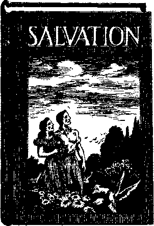

Contents
■ .<
The New Government Czechoslovakia Under the Nazis
Counsel by J. F. Rutherford Baptism with Fire and Water
Will They See? Will They Henri
PtibllBhed every other Wednesday by WATCHTOWER BIBLE AND TRACT SOCIETY, INC.
117 Adams St,, Brooklyn, N, Y., U* S. A.
Editor Clay tan J. Woodworth
Business Manager Nathan H. Knorr
Five Cents a Copy
?1 a year in the United States
|1.25 to Canada and all other countries
NOTICE TO SUBSCRIBERS
Remittances; For ymir own safety, remit by postal or express money ardor, When coin or currency Is lost In the ordinary mails, there is no redress. Remittance! from countries other than those named below may be made to the Brooklyn office, but only by International postal money order.
Receipt of a new or renewal subscription will be acknowledged only when requested. Notice of Expiration is sent with the journal one month before subscription expires. Please renew promptly to avoid loss of copies. Send change of address direct to us rather than to th® post office. Your request should reach us at least two weeks before the date of Issue with which It is to take effect. Send your old as well aa the new address. Copies will not be forwarded by the post office to your new address unless extra postage is provided by you.
Published also in Afrikaans, Bohemian, Danish, Dutch, Finnish, French, German, Greek, Hungarian, Japanese, Norwegian, Polish, Portuguese, Sp&iUflh, Swedish, Ukrainian; also special Australian edition in English;
OFFICES FOR OTHER COUNTRIES
England 34 Craven Terraco, London. W. 2
Canada 40 Irwin Avenue, Toronto 5, Ontario
Australia 7 Beresford Road, Strathflcld, N.S.W. South Africa K23 Boston Houae, Cape Town
Kntered as second-class matter at Brooklyn, N. under the Act of March 3, 1879,
Appetizers
Rule, for Handling a Woman by Electricity
If she talks too long—Interrupter. jK 'JI w If she wants to be an angel—Trans-M * In? former.
If she is picking your pockets-^-Detector. ■
If she will meet you half way—Receiver.
If she gets too excited—Controller. J
If she gets up in the air—Condenser. ■
If she wants chocolates—Feeder.
If she sings inharmoniously— Tuner.
If she is out of town—Telegrapher, If she is a poor cook—Discharger. If she is too fat—Reducer.
If she is wrong—Rectifier.
If she gossips too much—Regulator. ■
—From The Locomotive.
Old Mrs. McDuff was seriously ill. Her doctor warned her, “I must operate, and without delay.”
To his relief she consented, but only with the understanding that the minister must be present. .
“But—what fori” asked the astonished ' doctor. “What good could the minister do?
I never heard of such a proposal!”
“Maybe no,” replied Mrs. McDuff, calmly. 1 “I ken that doctors is maistly heathens. But I ken. whit's' decent an' fittin’. An’ I tell ye, if I’m to be opened at a’, I’ll be opened wi’ .... prayer.”—£a& or. ' ■
Stre«tc£fr-P!«iaantTie»
The conductor helped the' fat lady aboard the streetcar, saying as he did so, “You ought to take yeast, lady: it would help you-to rise.” “Thanks, young man, and if you will take some yourself you will be better bred,” she replied.
Overheard in the Subway
“We’ve got a chair that goes back to Louis the 14th.” _
“I know how it is. We’ve got a whole dicing room set that goes back to Sears-Roebuck the 26th.” .
Courage or ReckleB«ne«* ?
Was it courage or just plain recklessness that made the Australian Consolation say that many a peach has been preserved in a beauty parlor ?
consolation
“And in His name shall the nations hope.”—Matthew 12:21, A.R.V.
Volume XXI
Brooklyn, N. V., Wadnesdey, February 21, 1940
Number 633
THE Yearbook of American Churches states that a total church membership of 64,000,000 in the United States consists of 38,000,000 Protestants, 22,000,000 Roman
Yes)
Catholics, and 4,000,000 Jews. It thus appears that of the approximately 130,000,000 people in the country less than one-half are interested in what the religious systems have to offer. This is not surprising when one considers what the churches hand out to those who pay out hard-earned coin to support them.
After twenty years of hard work the joint conference of the Methodist Episcopal Church, the Methodist Episcopal Church South and the Methodist Protestant Church united as one body, at Kansas City, Missouri, and will hereafter be known as the Methodist Church. The new church starts out with 7,856,000 members, making it truly a Great Big Flock. Just a question here. Will the new church relight the old-time hell-fires, once an essential part of Methodism? The answer is, No! The clergy know there is no truth in the doe-trine, and the worst of it, or the best of it, is that the people know it, too. The assets of the business are set at $650,000,000.
At a get-together convention of various kinds of Methodists, at Long Beach, California, Bishop William C. Martin made the re. mark that unless something significant should come of the Methodist unification the public would be disappointed, and, in his judgment, so would God be. The god who would be disappointed would, of course, be “the god of this world”, who is the Devil; for the Methodist churches, all of them, whether they know it or not, exist for the one great object of doing V'-dishonor to God's name and thus doing the will of the Devil, whom they unwittingly \ serve. The very suggestion that God would be - "disappointed” shows that.
Judge Rutherford invited the big guns of the Federal Council of Churches of Christ in America to defend themselves publicly over the radio on the charge that they serve the Devil and not Jehovah God, the Creator. So far they did not perk up enough courage to say a word, even though eight of the biggest of them were sent personal invitations through the mails. Now two of their trusted employees or associates arc accused of having embezzled something over $8,000 in two years, in hanging on to donations instead of forking them over to the racket itself. That seems to suggest it is best to be religious the regular way.
The “Right Reverend” Hayward Sellers . Ablewhite, Episcopal bishop of Northern Michigan, is embarrassed because he cannot just remember what has become of some $90,000 of the diocese’s funds. Inquisitive persons photographed some of his checks payable to Tony De Quarto’s night club, the Royal Follies Night Club, Harry’s New York Bar and other similar places where Abie the Bishop was known as a good spender, and then it came out that one of his dearest friends had been a guest in a Chicago jail when the bishop first met him, and that he had induced the bishop to take a flier in the street with the usual result. In a little while now the bishop may have to go to work, and he will be in luck if he can find any farmer that will want him to keep his cattle.—-Zechariah 13: 5.
Lave of Money
The foregoing incidents suggest that the love of money is a factor in the clergy business. The following items give further proof. These are just picked at random from current happenings, but suffice to show the trend.
It is thought, generally, doubtless by religionists, that the United States Senate needs to be prayed for. One would think that the clergy would be glad to do this; and they are —for a consideration. It appears that the Senate needed only four prayers during the 1939 legislative session. Chaplain Zebamey T. Phillips went to the prayer mat for. the Senate that many times for his regular salary of $1,680. That is $420 per prayer, which seems rather high. There is no record that the annual stipend was refused in view of the limited service rendered. Now, however, the official praymaster will have to go to the mat every day the Senate meets, and not just occasionally.
At Akron, Ohio, members of a colored congregation came in contact with the truth and then asked their pastor why they should support him. For answer he lost his temper and said, in substance, “I never did work, and I’ze. not going to start in now, regardless of what you-folks says or thinks.” That was a bad slip, for his members then told him, “Parson, from now on you is getting no mo’ support from us.” If the clergyman carries out his threat he may have to stop eating. .But that might be a help to Akron chickens.
Grape Nuts”
At evangelistic meetings of the Pentecostal outfit in St. Joseph, Missouri, on every other night the hell-fire-screech er passed out in the congregation slips of paper with names of different foods on them. All in the congregation were “privileged” to take one and the next night bring that food for the use of the preacher. One lady got a slip marked “Grape Nuts”. That food being relatively high, and the lady not feeling that she could afford the expense, she obtained grape nut flakes instead and took them to the meeting. The next succeeding night a personal slip was handed to her reading “Grape nuts, not grape nut flakes”. But the lady could not see she was being taken for a ride, and still loves the Devil’s religion and hates the truth as much as ever.
The religious racket in Scotland is worked through the Church of Scotland. The farmers are compelled to pay a stipend or teind (tithe) for the support of this institution, whether they -wish to do so or not. Recently the stipend in some districts was increased and farmers have to pay the new assessments or go to law and pay the assessments and a lawyer in the bargain. And what do the clergy, many of them, dish out for their subjects? Note the following:
Sneering at the Scriptures, the “Reverend”
T. Vernon, in an address in the HyndUnd, Glasgow, Parish church, is reported to have said that “there was something encouraging about the belief that man was the descendant of a large, hairy and athletic ape swinging from tree to tree, rather than the offspring of ' the dull and uninteresting couple, Adam and Eve, who lived in the garden of Eden”. .
As the first couple left the hands of the A Creator He pronounced them “very good”, V and if they had not sinned they would be in ; the garden to this day and the earth would be fast approaching its promised perfect condition. Adam and Eve were sufficiently interesting that they became the ancestors of the “Reverend” T. Vernon. This particular item is not mentioned to their credit.
The fact that a so-called “clergyman” call make statements such as the foregoing and still hold on to his ecclesiastical meal-ticket condemns the whole religious outfit. Vernon is only a sample of a host of clergymen dealing out equally edifying opinions, and the rest of them co-operate with these in keeping the system in working order so as not to lose out on the money end.
“Under the Alb”
Meanwhile the clergy seek to cover their activities with an outward appearance of sanctimoniousness. They have a distinct preference for holy garments, generally of the type which in the common walks of life are reserved for women.
A British subscriber sends in a clipping entitled “Vicar Will Turn Out Trousered Women”, and wants to know why the vicar himself wears skirts. There is a manifest connection between this clerical leaning and the prophet’s statement at Jeremiah 2:34, “In thy skirts is found the blood of the souls of the poor innocents.” Undoubtedly ecclesiastical “Christendom” is guilty of the blood of many millions that have died in wars and other conflicts, practically all of which have been backed by the skirted fraternity.
Sometimes the proclivity to appear in garb that distinguishes them from real men leads the clergy into odd directions. Here is an example.- The Scriptures forbid a man to put on a woman’s garment (Deuteronomy 22: 5), but nothing in the nature of a command from the Lord is allowed to interfere with religion; not in New England. And so the “Reverend” J. Sterling Ward, pastor of the Lakeside Methodist Episcopal church, and fourteen other men dressed as women and paraded back and forth across a stage in Lynn, trying to win prizes in a beauty contest. Three women were the judges, but they fell down on their job and decided that not one of them was fit to receive a reward.
One might say that this was bad enough, J but the following is even worse, and one almost / feels inclined to apologize for mentioning it. But the story is included as one of the exhibits in the case. “Reverend” Joe Jeffers has k' a church where one doesn’t have to wear any clothes. At least he and his wfife didn’t when company called. Everything was going along fine, including champagne, when one of the male guests gave a signal, the doors were burst in, and the first thing he knew the “Reverend” Jeffers had been photographed w i t h nothing on except what he was bo in with, and his wife the same, and the next T thing he knew he was ’ arrested for maintaining a religious establishment, or something like that. This was in Los Angeles.
The sorry state of defunct Protestantism
Sermons and Their Source-Materials
The religionists like to convey the idea that there is some relation between steeples and marriage, though there is none whatever. Apparently trying to drum up a
little marriage business on the side, a Baptist church at Lakeland, Florida, had a. scries of six sermons on the subject. Some of the titles were “Seventeen and in Love”, “Will lie Qualify as a Husband ?” “Will She Qualify as A Wife?” “Love on Twenty Dollars a Week,” and “The Challenge of the Cradle”._The minister of the church, having not the least interest in the Bible, hut a lot in raking in shekels, . ’probably thought he would get at least a few ■ dollars out of his racket in this way.
The Collcgcside Congregational church of '' Nashville, Tennessee, was greatly uplifted when a dancer by the name of Ted, Shawn danced the doxology and preached on an opening prayer, dancing the Twenty-third Psalm, dancing a sermon, dancing hymns, and dancing the benediction. Some of the men in the congregation pined for a woman dancer rather than a man, but as most of the congregation were women the show as a whole was well received. You might as well laugh. Nobody is looking, and it wouldn’t make any difference if anyone wer e.
One of the funny sheets shows a dominie in his study getting ready to prepare his Sunday talk. As his wife turns and looks at him he flips a coin in the air saying, “Heads I give them hell-fire and damnation ; tails I preach brotherly love.” The hell-fire business is a lie from beginning to end, and if the world is really in for another general war you will soon see almost all the preachers insisting that brotherly love means murdering your brother on the field of battle.
At the Philadelphia Baptist temple 72 persons, beginning at
3 a.m., and ending at 10:10 p.rn., read the Bible from Matthew’ 1:1 to Revelation 22: 21. Thus it was once again demonstrated that the book can be read in about nineteen hours and that the religionists can be expected to do the fool thing every time. Certainly no one remained to hear the entire reading, and if anyone did he got no more out of it than the others who heard only a part. They were not there to learn anything. It was merely a religious performance, and worthless, to say the least of it.
Religious Monkeyshines
Once a year, in January, the religion of the Orthodox-Old Catholic Church in America makes it necessary for one of their bishops to bless the waters of the world, in Greek, and then cast a gilded cross into the waters of New York harbor, when, if anybody has the nerve, and is sufficiently foolish, somebody dives for the cross and brings it up. The bishop has a cord attached to it, so all the diver has to do is to follow the cord. The young man who recovers the cross gets his name in the paper. It is all perfectly foolish, perfectly absurd, but is religious from the word go, and many apparently intelligent people besides President Roosevelt seem to think that what the people need is more religion.
Something new in the religious business is that Episcopalians are taking an interest in the relic racket. At St. Thomas Protestant Episcopal church, New York city, what was alleged to be the holy grail (the cup shared by the Irord and the apostles at the Last Supper) was on exhibition. The police were requested to pay special attention to its protection, as it is rated as worth $300,000. It was shown only at certain hours. This is a grand preparation for the rush back to the arms of Rome, where such exhibitions are all the rage.
Blaming God for everything, and denying absolutely the Scripture teaching that the only hope for mankind is in a resurrection from the dead, the “Reverend Doctor” Harry Emerson Fofcdiek, in a discourse on human immortality, is reported as saying:
We Americans have flagrantly wasted the natural resources of our continent. We blame ourselves for that and for wasting human resources, being'spendthrift and prodigal in our social disorder with the personalities of people. But if death ends everything, then of all wasters of human resources God is the worst. He forever produces people and throws them away half finished; he creates capacities He never uses.—In New York Times.
The ‘‘Reverend Doctor” Harry Emerson Fosdick is pastor of the Riverside Presbyterian church, New York. He issued a statement that when Pacelli was made pope he (Harry) found himself echoing the cry of the Roman crowd, “Habemus Papam” (“We have a Pope”). That will be a big help to the “Reverend” Harry when he gets ready to make the shift to the choice which is in his heart. He can point back to that statement and say to Pacelli and the others, “You see, I was with you right along, but I had to wait for a good chance to break away.”
On the Death of the Pope
On the death of Pope Pius XI, the archbishop of Canterbury, for the first time in four hundred years, publicly notified an official body of the church of England of that event, lauded the dead pope to the skies, and called upon the Church Assembly of which ' he is the head to rise and pray for him. This request of an archbishop of Canterbury that prayers be offered for the repose of the soul of a dead pope of Rome is one of. the strangest bits of news of this strange time.
The official teaching of the Presbyterian Church is as follows:
There is no other head of the Church but the Lord Jesus Christ, and the claim of the Pope of Rome to be the vicar of Christ, and the head of the Church universal, is without warrant in the Scripture or in fact: and a usurpation dishonoring to the Lord. Jesus Christ.—Presbyterian Confession of Faith, chapter 27, section 8,
At Dallas, Texas, on the death of Pope Pius XI, Dr. Charles W. Welch, of Louisville, moderator of the Presbyterian Church, U.S.A., said (in New York. World-Telegram} ; .
■ The 2,000,000 Presbyterians whom I represent join all other Christians who experience sorrow at the passing of Pope Pius XI in expressing their sympathy to the largest body of religionists in the world at the great and indescribable loss of their wise spiritual leader.
Consider these two statements carefully and see if you can figure out why these 2,000,000 Presbyterians have all this sorrow, and why there should be such great and indescribable loss over the death of one who falsely claimed j to be the vicar of Christ, the head of the uni- • versal Church. \
The Southern Baptists are not quite ready . to go along with the Episcopalians and Pres-by ter ia ns—not just yet. The Southern Dap-tist Convention, meeting at Oklahoma City, passed resolutions deploring President Roo^e-velt’s act in sending British ambassador Joseph Kennedy to the pope’s coronation and also rebuked Congress for adjourning on ac- , count of the death of Paeelli’s predecessor. It had the courage and the manhood to object to the use of United States troops at the funeral of Cardinal Hayes. Three of the committee were United States senators, all democrats, and they wanted it distinctly understood that they are against the extension of the Social Security act to employees of religious agencieS and to bills pending in Congress to appropriate funds for sectarian schools. The pronouncement said:
We oppose the establishing of diplomatic relations with any ecclesiastical body, the recognition j in the Congress of the existence of any ecclesias- ' tical potentate, the extension of special courtesies by our government to any ecclesiastical official as auch, and the employment of any of the branches held to honor any ecclesiastical leader.—In Times Star. '
Habemus Mariam!
Any person familiar with the Scriptures knows that there is just one mediator between God and man. Mary had a most honorable 3^ place in bringing into the world the one who /• always addressed her as “Woman”, asked her 7 the question “What have I to do with thee ?” and said explicitly that ^whosoever doeth the h will of my Father in heaven, the same is my brother and sister and mother”. (John 2: 3, 4; 19:26; Matthew 12:46-50) But Mary would never have claimed for herself the role of mediator or intercessor manufactured for her by religionists. Hitherto the Roman Catholic Hierarchy has had a monopoly of mariolatry, but it is spreading to Protestant churches, especially such High Church Episcopalian churches as chance to be under Jesuit influence. On February 5, 1939, one of the Protestant churches in the' Pittsburgh district had a vesper musical service at 4; 30 p.m., and went to the trouble to print the words of the Ave Maria which follows, and which words are unscrlptural and a dishonor to God:
Ave Maria mighty, yet lowly, Pure and most holy, Hear from Thy starry throne our prayer: Though faithless friends may grieve us, Wealth and fortune leave us, Grant to our grief and to our pain Thy tender care, Saneta Maria! When we are tearful, When we are fearful, Give to us thine aid, To us thine aid, Thine aid of prayer! Ave Maria! Mother of the desolate! Guide of the unfortunate ! Hear from Thy starry throne our prayer: If sorrow will await us, Tyrants vex and hate us, Teach us Thine own most patient part to bear! Sancta Maria! When we are sighing, When we are dying, Give to us Thine aid, To us Thine aid, Thine aid of prayer!
. You may' honestly believe the Scriptures, written by holy men of old, who spake as they were moved by the holy spirit. If that is your stand you will believe the apostle’s statement: । We have before proved both Jews and Gentiles, that they are all under sin: as it is written: There is none righteous, no, not one.—Romans 3: 9,10. R'S| Or, if you do not wish to believe the Scriptures, written by the power of God,* you might wish to believe inste&d ^le wor(ls of “Reverend Doctor” Burke Culpepper, evan? gelist, lately working for the First Methodist church of Fort Lauderdale, Florida. Cul-' pepper takes no stock in such writers as David, the psalmist, or Paul, the apostle to the Gen-FBBRUARY 21, 1940 tiles. He takes more stock in the Roman Catholic Hierarchy. Using a strictly Roman Catholic doctrine and expression, and not at all a Scriptural one,'he described the virgin Mary as “Mary, the Immaculate”.
The Name of the Lord
An anonymous deity, for some reason, seems to suit the Devil’s purpose. The name of Jehovah was deleted from the Hebrew Scriptures on the pretext that it .was too sacred to pronounce. For almost two thousand years it was kept in the background. At the time of the Reformation the name was again given place in God’s own Word. It appears in such passages as Exodus 6: 3, Psalm 83:18, Isaiah 12: 2 and 26: 4, and Exodus 17:15. It is, further, a part of such common Scriptural names as Jehoshua (Joshua),1 Jehoiada,2 Jehoiakim,3 Jehona-dab,* Jonathan (Jehonathan),3 Jehoshaphat’ and others. To eliminate the name from the Scriptures altogether it would be necessary' almost to obliterate them; something which the religionists are, as a matter of fact, not averse to doing. While the name appears infrequently in the Common (King James) Version of the Bible, it occurs more than 6,000 times in the original Scriptures, and is likewise used in the American Standard or Revised Version of the Bible, of which every Bible student should have a copy.
While lauding the pope and Mary, as noted foregoing, religionists despise the name of Jehovah, which they are responsible for pushing into a corner. They should have published the name of the Lord, instead of obscuring it.
The efforts of the Devil to dishonor the Creator progress in every' land. In New Haven, the dean of the Yale University Divinity School, Luther A. Weigle, announced that the name which the Creator gave himself, and which appears over 6,000 times in the Scriptures, will not appear in a revision of the Bible on which he and others are working, “because 'Jehovah’ is not a functioning religious term.” In other words, modern religion has now gone to the extreme length of denying to the Creator the right to even mention His own name. What better proof could anybody desire that religion is the work of the DeviH
*Z AM THAT I AM”
In saying that the name “Jehovah” is not a functioning religious term, the clergy stray from the truth, as might be expected. It is, on the contrary, a fact that the name is found in many well-known songs. The versification of the 100th Psalm is an example:
“Before Jehovah’s awful throne, Ye nations, bow with sacred joy.”
This song was sung by Commodore Perry’s sailors when he made his first visit to Japan, and greatly impressed the crowds along the water front of Uraga.
It is true, however, that the clergy, and particularly the modernist higher critics, have sought to discourage the use of the name of Jehovah, referring to him slightingly as the tribal God of the Jews, when they should know, and do know very well, that Abraham, the faithful patriarch, spoke of Jehovah as the Judge -of all the earth. These clergymen have further sought to discourage the use of the improved American Standard translation of the Scriptures, not only because it reveals the name of Jehovah wherever it was used in the Hebrew originals, but also because it completely exposes the “hell-fire” error, by showing that “hell” refers to the grave. This error is dear to the clerical mind, and useful in the business of hoodwinking the credulous.
Take note how frequently, in the common version of the Bible, occurs the expression, “The name of the Lord,” and reflect how mean" ingless the words would be if the
Lord had not revealed himself by a name. Note that (in Exodus 3) Moses specifically inquires as to God’s name, and his inquiry is answered as Jehovah reveals himself as “I AM THAT I AM”, in verse 14, and identifies that (in verse 15) with “Jehovah”, of which it is a variation.—See American Standard (Revised) Version.
In view of the overwhelming Scriptural testimony to the fact that the name Jehovah is of the greatest importance, it is with no patience that one hears the “wise” quibblings and sophistries of those who pretend to teach the Word of God while undermining faith in it. Such quibblers object that “Je-ho'vah” is not the way the Jews pronounced the name. And what of that, indeed? Neither is the English pronunciation of “Jesus” theirs, nor yet that of any other term or word or name in the Scriptures! “Jehovah” is a modern equivalent for “Y H W H”, and comes closer to being a suitable rendering of it than any of the substitutes offered by these same faithdestroying, time-serving, money-loving hypocrites whose prototypes the Lord Jesus so scathingly denounced and excoriated as recorded in Matthew 23 (a chapter which every religionist should read often).
Romans 1:21,22 [Looft if up] A
“Rev” C. F. Aked, D.D., LL.D., Litt.D., ‘ ? All Souls’ Church, Los Angeles, California, ' seems to be a success in trying to show the people how foolish he is. r
He knows, or could know, that Jesus Christ constantly referred to Jehovah God as His Father, and quoted the words of His Father as authority for His own statements. Illustrations (A.R.V.) follow:
“Hear, 0 Israel: Jehovah our God is one Jehovah.”—Deuteronomy 6:4. Compare Mark 12:29.
“Thou shalt love Jehovah thy God with all thy heart, and with all thy soul, and with all thy' might.”—Deuteronomy 6:5. Compare Matthaw 22: 37.
“Thou shalt fear Jehovah thy God; and him shalt thou serve, and shalt swear by his name. Ye shall not go after other gods.”—Deuteronomy 6:13,14. Compare Matthew 4:10.
“Ye shall not tempt Jehovah your God.”—Deuteronomy 6:16. Compare Matthew 4: 7.
“Jehovah saith unto my lord, Sit thou at my right hand, until I make thine enemies thy foot-stool,”—Psalm 110:1. Compare Matthew 22:44.
“The spirit of the Lord Jehovah is upon me; be- T cause Jehovah hath anointed me to preach good. r tidings unto the meek; he hath sent me to bind up the broken-hearted, to proclaim liberty to the cap- 4 fives, and the opening of the prison to them that are bound; to proclaim the year of Jehovah’s favor.”—Isaiah 61:1, 2. Compare Luke 4:18,19.
In the face of these scriptures, and of the fact that the name of Jehovah appears in the original Hebrew more than 6,000 times in the _ Holy Scriptures, this man with so many selfglorifying titles published a “sermon” under the title “Jehovah, the Little Tribal God”, in which he said, in part,
The American Revised Version is marred by the introduction of the modern, manufactured, meaningless and entirely foolish word 'Jehovah’ as the name of God.
Now turn to Exodus 6:2, 3 and see for yourself that the great Creator states that Jehovah is His own personal name, and see what an appalling fool a man can be.
They hating Jehovah, it is not surprising i that religionists hate Jehovah’s witnesses, of r whom Judge Rutherford is one. (
At Geelong, Australia, a schoolboy, at the suggestion of his teacher, asked his father if he had ever read any of Judge Rutherford’s books. The father said he would . like to make a bonfire of all Judge Rutherford’s books. Two weeks later his house burned "■"k to the ground, completely consuming a library ./• worth $1000. ITe is a clergyman of the Church ■ of England. (Says Australian Consolation.) , Was this merely coincident?
Bishop C. Bromley Oxnam, Omaha, addressing the Pastors’ Union in Detroit, seems to sense the truth about racketeering in religion when, in speaking of some of his brethren in the ministry, he said of them :
Some of these men think they are ministers, but in truth they are nothing but supersalesmen, back-si appers and politicians gone religious. They are actually promoters, not ministers.
Religion versus Christianity
Dr. Ralph H. hong, executive director of the National Lutheran Council, in an address in Toledo, said, “The world does not need more religion, there’s too much religion now; but it needs more Christianity.” He thinks the “Christians today could turn the world upside down just as the apostles did after the death of Christ, if they had sufficient sincerity”, 'p That is true, too. lie must have been talking '* to one of Jehovah’s witnesses. Tie also objected to Roosevelt’s sending Kennedy to Rome to celebrate the crowning of the new pope. Won't. der if he is reading Consolation.
“Reverend” M. D. Lowen. Baptist, of Brockport, New York, stirred things up at a convention of Baptist ministers at Albany. He could see, and stated it plainly, that there cannot be two bosses in “Christendom”, and that with both church and state seeking everwidening powers over the individual, there are bound to be constantly more cases where the individual will bd called upon to decide whether to obey God or man.
Referring to the change in the New York State constitution permitting the use of publicschool buses to transport children to sectarian schools, he thought this an unnecessary and undesirable link between the state and the * church, and that it might be “the first stage y ?'of a courtship which may lead to an unhappy marriage at a later date”.
He condemned the recommendation of the •. Social Security Commission that all church employees should be included Under Social FEBRUARY 21, 1940
Security Law provisions. Churches will be taxed under such an arrangement, and, being taxed, would be under government supervision and possible closure for failure to pay the taxes demanded. .
He also condemned the New Jersey law against Jehovah’s witnesses, which practically places every witness in the criminal class for teaching what the Bible has to say on worshiping images and things, and demanded the repeal of the law.
“Reverend” Lowen has manifestly been feeding on the truth. Let it be hoped that he may continue to grow strong in the Lord and the power of His might and come into the full liberty of the light now shining.
Memories of Happy Days
SRoy Goodrich writes to Orien W. Fifer, editor of The, Christian Advocate, published by the Methodist Book Concern, at 420 Plum street, Cincinnati, Ohio. Fifer makes his living, in part, by lying about Jehovah’s witnesses and quoting Roman Catholic papers to back him up in his false statements. Goodrich reminds him of the happy days of their youth, when they were members of the same “church”, and of some of the holy brethren they knew: the choir leader who paid a $500 fine for selling whisky at his drug store; the Sundayschool teacher who shot his wife’s fleeing doctor and afterwards fled town because of lying with his own daughter; and the man mighty in prayer who gypped an old widow of all her property. And then there was the anonymous letter-writer, and the willing workers that never did a tap of work, and the seminary where both were . taught that, their grandfathers were monkeys, the Bible vvas full of mistakes, the instructors were inspired in the same way as the writers of the Bible, and where the graduates did not know whether or not there is a personal God. Two paragraphs from Goodrich’s letter follow:
Fundamentally, your digest errs in adopting the usual Catholic dictum that Jehovah’s witnesses are a sect or cult, espousing the doctrines of one Rutherford, who anathematizes religion, governments, Christianity,—and what not? This dictum is not only false, but has not changed essentially since it sent Jesus to the [tree] ; Stephen to stoning by bigots; Arius to banishment; John TIuss to the flames; and countless thousands to the concentration camps of the Madman’s Third and Catholic Reich. No Christian could be more “popular” with the religious status qua than was Jesus. It is of Bible record that Paul the apostle was stigmatized as the rabble-rousing ringleader of an unwanted seditious “sect”. (Acts 24:5) Unwittingly, Catholic Action, which you quote with approbation, honors Judge Rutherford with that identical false charge us recorded in The Acts. All witnesses of Jehovah share this honorable reproach; but they are neither a rabble nor rousers, neither a “sect” nor seditious.
Jesus was accused of being a young upstart less than fifty years old, of doubtful birth and of no education; of being a deceiver, propagandizing the people with His own personal subversive opinions; and, at the last, of sedition against Caesar and of blasphemy against God! Today, the witness of Jehovah is doing the same work and getting the same pay as did his once crucified Leader. Under identical accusation, he cannot improve upon the answer which Jesus made to His critics, to wit: “My doctrine is not mine, but his that sent me. If any man will do his will, he shall know of the doctrine, whether it be of God, or whether I speak of myself,” (John 7:16,17) If such doctrines of Jehovah, and such divine answer by His witness, shock the religious susceptibilities of parochial school graduates (or “Wesleyan” graduates), and arouse their ire to persecution heat, then the witness cannot assume responsibility. Such are fighting against God himself, as Gamaliel once admitted behind closed doors.
The "Best" People!
The old story that ‘where religion thrives, i.e., where the churches are, there exist the beat social conditions’ has now been thoroughly exposed. As might have been expected, it is a tale woven out of whole cloth, a fib, a fabrication. In a three-year survey of American cities, Dr. Edward L. Thorndike, of Teachers College, Columbia University, has found that preachers (he wisely refrains from mentioning the priests) and church members are most numerous where “general goodness of life for good people” is at low ebb. That means that the more preachers and churches, the lower down the people. He asks, “What are the churches doing with their prestige and power if they are neither helping the health and education and recreation of a community nor improving its personal qualities of its residents ?” Next time somebody asks you how you would like to live in a city without churches, show him this item.
The following may contribute something toward an explanation of the situation. It is, at any rate, an interesting bit of information. Says Jerome Davis, in Harper’s Magazine:
In cities and towns of five thousand or over, control of the church is now largely in the hands of the favored economic classes, Approximately three-fourths of the chairmen of the boaxda-belong to the business groups or are subservient to them. Thus there exists an interlocking control of the church by the same capitalistic intereats which control business. The churches themselves-A are huge commercial enterprises. The total value jt of church property in New York is more than ) $282,000,000. This does not include taxable prop- £ erty, such as real estate, stocks, bonds, and cash * awaiting a “profitable” use. The investments of " “ the church represented by its endowments and surplus funds run up into hundreds of millions of dollars. The church organization thus has a tremendous stake in the profit system. The annuity fund for Congregational ministers alone has large sums invested with 54 railroads, 9 governmental agencies, 2 industrial corporations, and 43 public utilities. In addition, it has stock in the American Telephone and Telegraph Company, in the General Electric Company, and in vast real estate holdings. A single institution, Trinity Church in New York eity, has real estate valued at' $16,000,000. It has an annual income from investments alone of nearly $2,000,000. It is said that the aging Trinity Church steeple has' come to lean some eighteen inches in the direction of Wall Street.
Church welfare is bound up financially with the welfare of capitalism.
The nations (and the churches) do not want God. They want the pope and Mary, and prayers for the dead. Of course, this last innovation must be introduced very carefully; for Protestants are still a little wary about “Purgatory” and its proprietors of the clerical tribe.
It is not known just what organizations go to make up the Protestant National Christian Council of China, but it is known that the Presbyterian Church is in co-operation with it. The Council recently issued a prayer for the dead which reads as follows:
Let us pray for the departed. Almighty God, hear us when we call upon thee for all those who have passed into the unseen world. Grant that all that is good in them may be expanded and ripened; all that is evil and um Christ like may be eradicated and all misconceptions of truth may be swept away.
The National Christian Council should take a 1 ittle time off to study the Scriptures, of which Jesus said, ‘Thy Word is the truth.’ If they would do that, one of the passages they would run across that would help them to see how much chance the dead have to be expanded and ripened would be the following:
Whatsoever thy hand findeth to do, do it with thy might; for there is no work, nor device, nor
i,
•J
If
knowledge, nor wisdom, in the grave [(Hebrew) sheol, hell], whither thou goest.—Ecclesiastes 9:10.
The dead know not any thing.—Ecclesiastes 9:5.
The “Reverend” Paul Harris, of Auglaize county, Ohio, should shame himself. When all the rest of the “Protestant” clergy were guests of the rector of Holy Rosary Catholic church, St. Mary’s, he had to be out of town, but every other Protestant clergyman in the city was there, at “a dinner, the pleasing mempries of which will linger long, and add a ...,-phapter to the religious jife of the city”. One can imagine the clergy who attended that feast as making a big fusd over Roman Catholic encroachments on American liberties. That is, he can if his imagination is big enough, but he would surely have to have a big one.
Shades of Martin .Luther! Two miles from Ossining, New York, a prominent Catholic, Major Edward Bowes, donated his estate to the Lutheran Church for use as a retreat. Lutheranism, and all Protestantism, is in retreat, sure enough.
Archbishop Derwyn T. Owen, primate of the Church of England in Canada, has written to the Canadian prime minister assuring him the clergy are back o^ him, just as in 1914, and willing to take as many jobs as chaplains as they can get.
> Four students for the ministry went to f Hyde Park, New York, to find out why the <fReverend” Frank R. Wilson had prayed in the presence of President Roosevelt that King George might “vanquish and overcome all his ' enemies”. They learned that the dominie was thinking only of the king’s spiritual enemies when he-made the prayer, and not of Adolf Hitler; so everything was all right.
The “dogs” are beginning to bark for war. “Reverend Doctor” J. Frank Norris, of Fargo, Texas, and of Detroit, Michigan, in an interview in Shanghai, China, said, “I shall return to the United States as soon as I can to make 1 a tour and to go on the radio in an effort to rouse the people of America to the necessity of going to war against Germany.” In due time he will have lots of company among the clergy, whose first loyalty is to the governments of this present evil world, and to the god of this world, the prince of darkness, Satan,
In an address at Washington, Pennsylvania, ' < the “Reverend” C. S. Thomas, Presbyterian j pastor, from Hickory, Pennsylvania, said, in part:
We used to have wooden churches and granite preachers, and now in mapy instances we have granite churches and wooden preachers. We are deceiving ourselves when we say man-made schemes can rule the world. We are a nation of Biblerejecting, machine-worshiping pagans.
Of similar import is the statement of "Reverend” Dr. Frank M. Sheldon, Congregational pastor of Milwaukee, Wisconsin, who said to the Federated Church Women of his city:
The United States is not a Christian country. Not even the church is Christian-—it doesn’t dare to be. -
So, occasionally some preacher who has not yet got clear of the sinking religious wreck begins to sense that not all is well. The foregoing are examples, and as a conclusion to this brief survey of the state of religion, and particularly effete Protestantism, the following ■ observation regarding the state of “Christendom” is quoted from the' pen of “Rev.” William H. Rogers, of the First Baptist church of New York city:
They tremble at the rim of an inferno to which they have resigned themselves as inevitable. Economic collapse threatens on every hand. All the governments have mortgaged unborn generations to eare for present needs. In the midst of abundance, poverty has multiplied. Fear of the future haunts every land. These conditions are portents of the end-time.
The apostasy and worldliness of the organised church have greatly increased. Religious Babylon has adopted the methods of the world and the tricks of the Devil to run the church. Places of worship have been turned into dens of gambling and temples of thievery. People have become lovers of pleasure more than lovers of God.
There has been an increasing intensity of national, religious and class hatred. A civilization which can give truth to such shameful persecutions which have marked the passing year is not worth preserving, “Where is God?” Just where the nations have left Him—-ignored or forgotten!
While here and there a dissenting voice is heard, the clergy of both Catholic and Protestant denominations are drawing closer together, as has been shown. They are building their own kingdom, unwilling to recognize the Theocracy or to abide by its righteous rules. Their efforts will but serve to land both them and their supporters in the ditch. And when Armageddon has cleared the world of these opponents of righteousness a better world will arise, to the vindication of the name of the eternal Jehovah, whom they have despised.
♦ When, last September, the suppression of Czechoslovakia by Hitler became a reality I immediately set out from Prague, where I had been working, to pay a visit to my parents, in order to arrange certain family matters, and to bring back clothing and various indispensable articles.
I paid the cost of the entire journey, but the train came to a stop about twenty-five miles from home; so I had to finish the rest of the journey on foot. After walking for seven hours I suddenly found myself, about ten o’clock at night, in the middle of the Czech front-line troops. The sentries pointed their weapons at me, and ordered me to approach slowly. They then examined my papers, and allowed me to pass inside the barbed wire. Half an hour later I arrived in sight of my native village, near which I found an independent body of Sudeten Germans, consisting of armed civilians wearing badges. They commanded me to halt and give the password. I gave my name and stood motionless. The two sentries with fixed bayonets assured themselves by the light of their lanterns that- my papers were in order and that 1 originally hailed from that locality. One of them said to me, “You have been lucky to get as far as here alive. All the week firing lias been going on, and there have been a number of killed and 'wounded. We are now going to take you to the commander’s quarters.”
I almost thought myself dreaming wdicn I found they wrere leading me to the house of the parish priest. “Ah,” said I to myself, “here is yet a further proof that the Roman Catholic clergy are meddling with politics and supporting the rebellion.” (According to the Munich agreement my native country came under the dominion of the German Reich on the 6th October 1938, but German troops w-ere in occupation ten days before that date. The Czechs, desirous of avoiding new conflicts, did not offer any effective opposition to that anticipated occupation.) “But,” I reflected again, “perhaps the priest has been compelled to put his house at the disposal of the insurgents.”
However, I soon recognized my error when I saw the said ecclesiastic in the midst of the commandant’s quarters, issuing orders and transmitting information by radio. If only all Catholics could hjive seen that disgraceful spectacle of a traitor at work, their eyes would perhaps have been opened.. If I had not per- L sonally witnessed these things I would never ’ have believed that such close collusion ex- ! isted between the clergy and the Third Reich. A.
As soon as 1 entered the room I was ordered to give the German salute “Heil Hitler”. The usual “Good morning” and “God bless you” are considered anti-Nazi salutations, and are therefore condemned. But in spite of several punches in the face and. kicks in the back, I could not bring myself to pronounce the blasphemous salute. I tried to show them that salvation eould come only from God and Christ Jesus, as set forth in Acts 4: 12 and Revelation 7: 12, but my words were wasted. While 1 was being searched the sergeant major forcibly struck me on the head with four notebooks and a bunch of keys found in my pockets. “What did the keys mean?” he shouted at me. 1 bent my head forward just in time to av6id receiving full in the face a necklace of glass beads, which I had intended as a gift for my young sister.
Two booklets, Warning, by Judge Rather- y ford, and a copy of The Watchtower and an- \ other of Consolation were confiscated. One of j' the searchers said, “T know' those books. A f man came to my house offering them. 1 took ' him for an unemployed beggar, and offered him some small change. The fellow7 refused it, saying he was circulating the publications, not for money, but in obedience to God. So I threw the Lord’s messenger out.”
When Commander Schnitter came, he first questioned my persecutors, and then delivered himself of the following speech.:
Young man, I know those books. I have read a number of passages in them, and I must say they contain many flue things. But they are for us, and not for you. What you want is plenty of hard work, which will not leave you a minute for thought, but in the evening will send you exhausted to bed, so that you will be glad to go to sleep. And I shall see that you have this. You will re- a " main here for a time, and then you will be taken * to a concentration eamp for six months. There we A shall teach you to obey and say “Heil Hitler”. 4 You are weak in the head and incapable of dis- r' eerning the ruses of the Bible Students. You have
jacra view ui xiunu uuuuuu piuucei jauiuk
?■ been deceived and made a slave of the Jews. It is a pity you are by trade a cabinetmaker, but we shall not allow you to return tp Prague. You belong to x this district, and are therefore a German under the
Reich.
At two o’clock in the morning ! was taken to be locked up in the town prison. However, as it happened, the warden knew me well, being one of our tenants. For this reason I was merely detained, and not locked up after all. I handed over to my acquaintance some money for my father with a request to inform him of my presence there.
In the morning I had to face a volley of insults from the municipal council. Some of the mildest of these were “Salve of the Jews!” “Traitor!” “Czech spy!” After this I was again conducted to the parish priest’s house. Towards midday my father and younger '^"''brothers and sisters had permission to visit ,'me and bid me farewell. I was then taken in an *’ automobile to the general commander at Jauernig, where I was onee again cross-examined, This was done by five civilians, and took place in a large hall. The officer commanding was an engineer. This examination again furnished me with the opportunity to say that the only Higher Powers are God and His Son, Jesus Christ, and that apart from them there is no salvation for anyone.
One of the Germans ironically asked me, “What would you do if I proceeded to kill you with a revolver bullet?” I replied, “I have no fear of that. You can kill me only if God permits it, and if He allows me to be slain, He will raise me up in His own due time, and for that act of murder, the greatest of all crimes, He will punish you severely.” The Nazi was filled with rage and shouted, “It’s always your God. If I drag you by your feet onto the railway line and leave you there, Will your God help you then ?”
All at once a change occurred. The commanding officer entered and said, “It is probable that you will return to your native village:” Things began to alter. I was given a meal consisting of an excellent omelette, and then again I had to set out. The sergeant
Immersion scene at Mobile, Alabama, convention of Jehovah’s witnesses (Colored)
major, who had at first been like a raving madman, was suddenly transformed. He tried to convince me of the greatness of Germany, spoke of the possibility of my working in the Third Reich for a good wage, and then once more became threatening.
If you now choose to throw in your lot with the Czechs, you will be expelled by them as a German. Over there, too, the unemployed are more num er -ous than ever. And if you afterwards return to this district you will be looked upon as a spy and a traitor, and you know what fate is reserved for them. Now go to your home, and come at midday tomorrow, and tell me what you decide to do.
The following day I presented myself at the appointed time. “Well, have you made your decision? You are remaining at home, are you not?” asked ;the officer. “No,” I replied, “I live at Prague. I have work there, and I am returning to it. Kindly give me a passport, so that I may have no trouble with the troops.” My questioner became furious, hurled a flood of insults at me, and finally said, “You will have no passport. I don’t give my signature for the Bolsheviks of Prague. Get back there if you can.”
Well, to conclude my story. I did get back. I feared that I should be shot in the back when I passed through the cordon of sentries, and knowing how often this had happened to my Christian brethren in Germany, I expected no better treatment. I had a narrow escape, but my God, in whom I trust, delivered me from the net of the fowler.
Two of Jehovah’s witnesses in the district have already been taken away to Germany, and nothing has been heard of them since. Their relatives are persuaded they are dead. Two other witnesses have taken refuge in Czech territory, and are experiencing great
Kingdom advertising and Kingdom Hall, Honolulu difficulty in finding work, and in being tolerated by the authorities. All Jehovah’s witnesses in the Sudeten territory have very trying times in prospect; for how can they be true to God and give the Hitler salute?
But if they look to their Lord and Master Jesus, who also was put to death for bearing witness to the Truth, and if they recall the Divine precious promises, they can triumph in the fight, the issue of which is for them a question of life or death eternal.—Translated from French Consolation by F. R. Freer.
•yb'JUfefe- under inspiration the Fed-era^ Communications Commission
jfcS n ||l] °^ers become the Board of Censors of the United States of Amer-hhuW anc] names fourteen kinds of programs it would like to take off the air. One of these varieties, and this is the colored gentleman in the entire woodpile, is the right to cut off any program “offending religious or racial groups”. The Washington Times Herald says of this Commission: '
Its current attempts to establish Itself as a board of censorship of everything that goes on the air should be stepped on, and stepped on hard by both parties in Congress.
♦ In a London, England, court, in the second month of the war, W. Young, Glasgow, twenty years of age, one of Jehovah’s witnesses, was granted unconditional exemption when he took his stand as a conscientious objeetor and stated that Jehovah’s witnesses do not even F vote. When asked if there are any adherents in Germany, Young replied that there are # 2,000 but they are in concentration1 camps. ' The British White Paper of October 31, 1939,
- Sound-ear in action at Birmingham, England
OS to a Watchtower study
it may be remarked, pays a striking tribute to the stand Jehovah’s witnesses have taken in Germany, and to the treatment they have endured in the concentration camps. The nv courageous and faithful witness to the name G and honor of Jehovah God which has been given by Jehovah’s witnesses in Germany under the reign of the Roman Catholic dictator, . Hitler, is one of the most outstanding tributes
to the great and loving Creator that have ever been given in the world.
♦ While witnessing in the mountains of Calhoun county I came upon an old helpless colored man, seated in his chair, unable to move. I gave him a witness with the record ‘Religion is a snare and a racket’, and further told him of God’s purpose to shortly fill the earth with a righteous race of people, and that all religious institutions and religionists would perish in Armageddon, which is to come upon this generation. He seemed to appreciate what I had to say, and when I explained the difference between religion and Christianity he said '|rto me that a white woman came into their / community the year before and seemed to be 'very religious. She wanted to teach them and
to pray for them. He also said that w'hile the ' woman religionist was kneeling in prayer be-
FEBRUARY 21, 1940 side his wife she stole his wife’s pocketbook containing $15—all the money they had in the world.—W. B. Crabb.
President George Washington said:
The pure and benign light of Revelation (the Bible) has had a meliorating influence on mankind and increased the blessings of Society.
President John Quincy Adams:
The first and almost the only book deserving of universal attention is the Bible. The earlier my children begin to read it, the more confident will be my hopes that they will prove useful citizens of their country and respectable members of society.
President Zachary Taylor: ,
It was for the love of the truths of this great and good book that our fathers abandoned their native shore for the wilderness.
President Ulysses S. Grant:
Hold fast to the Bible as the sheet anchor of our liberties. To the influence of this book we are indebted for all the progress made in true civilization and to this we must look as our guide in the future.
President Benjamin Harrison;
If you take out of your statutes, your constitution, your family life, all that is taken from the
Sacred Book, what would there be left to bind society together?
President Theodore Roosevelt:
Almost every man who has by his life-work added to the sum of human achievement of which the race is proud, of which our people are proud, almost every such man has based his life-work largely upon the teachings of the Bible.
President Woodrow Wilson:
A man has deprived himself of the best there is in the world who has deprived himself of a knowledge of the Bible.
Daniel Webster said:
If we abide by the principles taught in the Bible, our country will go on prospering and to prosper; but if we and our posterity neglect its instruction and authority, no man can tell how suddenly a catastrophe may overwhelm us, and bury our glory in profound obscurity.
President Grover Cleveland:
No thoughtful man can doubt that to decrease the circulation and use of ( the Bible would seriously menace the highest interests of civilized humanity. The story does not seem complete without some reference to the Bible-burning tub of Philadelphia, Dennis Cardinal Dougherty. Dennis is no blood relative of the late Dutch Cardinal Schultz or the present Al Cardinal Capone, but goes to the same “church”. He supervised the burning of the Bibles while in charge of his racket in the Philippines.
Vicious Flogging of Witnesses
♦ A report comes from Concentration Camp 5, Neusustrum, Emsland, Germany, that when new arrivals are received the chief of the camp commands that the witnesses of Jehovah shall step forward. He then asks, “Which of you wishes a Bible?” All apply for it. The chief then orders another official, “Go, fetch the Bible!” The “Bible”, when it is brought, is a cudgel, with which the chief beats each witness, and then says, “In ease you still want a Bible, sometime later, all you have to do is to ask the chief for it and you will surely receive it,” by which another beating is threatened. German prison rules forbid the beating of a prisoner unless he shows himself rebellious, but Nazi officials pay' no attention to the laws. They are a law to themselves.
Every Word Is True
♦ During an information march at a zone gathering a clergyman passing in an automobile observed the sign “Religion is a Snare and a Racket”, and picked out the first place he could find in the traffic and waited until the march came along. Asking one of the marchers, as they came abreast of his ear, what it was all about, he was given a Face the Facts booklet and told to read it. The clergyman went home to a neighboring city, read the booklet, and the next day, Sunday, preached from the booklet, then held it aloft and told ,, the congregation about the information march,' $ and said of the booklet itself: “Every word of » this booklet is true, but you people have gotten so far away from the Bible that it doesn’t ■ pay to talk to you about it.”—K. H. Carpenter.
♦ Some time after the court case in Lismore over the destruction of a placard, when the police were obviously biased in the enemy’s favor, I was driving out of town late at night with four placards up on the car. Suddenly I saw a car pulled up in front of me by the police. They stopped me also, then a ear behind me. It appeared that a man had been arrested by two policemen, and they required a lift into Lismore. Evidently the car in front was in a hurry, and they let it go. Then they read my signs and tried the car behind me. Apparently he was unable to oblige them either; so back they came to me. They bundled their prisoner on board and back we all went to the town. Driving along the main street I thought how strange it was that here were the very r policemen who had locked me up for a night . during the previous week, riding along with the selfsame signs that had caused them to arrest me. On arrival at the police station, , they thanked me graciously and I drove off with their assurance that I was a very good and law-abiding citizen for so readily helping the police.—Australian Consolation.
The Baptist evangelist at Moweaqua, Illinois, stuck his foot in it. He became excited over the presence of Jehovah’s witnesses* sound-car in town, and made a bitter, savage, un-Christian attack on Judge Rutherford, lying like the Devil and raving like a mad dog. Thereupon Jehovah’s witnesses went all over town playing the record ‘Why the Clergy Oppose the Truth’, with the result that many stated that they were all done with the brand of hypocrisy the evangelist had been dealing out; that he has no Christianity and that they had had the evidence with their owm ears.
(To be continued)

DUSING the World War, when the newly trained soldiers were led into their first active encounter with the enemy on the firing line and came through it alive, it was said to be their “baptism of fire”. This expression was plainly a counterfeit application of the words of John the Baptist, to wit: “He [Christ] that cometh after me is mightier than I, ... he shall baptize you with the holy [spirit], and with fire.” (Matthew 3:11,12) The “fire” baptism evidently refers prophetically to the fire of the battle of Armageddon, which baptism oi' immersion will be the destruction of all of the Devil’s organization, and protection to those who find refuge in Jehovah’s organization. That “fire” will be a time of tribulation such as the world has never known ; and never again will it occur, because it will completely destroy the wicked.
John came baptizing with water. Later Christ Jesus sent His disciples forth with the commission to teach the people and to baptize them. (Matthew 28: 19, 20) It is the duty of every one who is a witness for Jehovah God to teach his fellow .creatures the truth, which includes the privilege of baptism, which baptism is administered in the name of Jehovah and Christ Jesus and of the holy spirit.
When John the Baptist came as the representative of the Lord he commanded the Israelites to repent of their sins against their law covenant with Jehovah God and to be baptized. (Matthew 3:1-11) Those who did repent and were baptized testified thereby that they had changed their course of action and that they would rio longer be guided by their own selfishness and would gladly obey the will of God. Those who had not violated . the covenant, but had been faithful to God, had no need to be baptized.
W Baptism, therefore, symbolically and out-'• wardly testifies to an agreement to do God’s * will. If a man believes on the Lord Jesus
Christ as his Savior, is it necessary for him to ' then be baptized in water? Yes; and when you understand the purpose of baptism you will readily agree. When Jesus reached the age of thirty years He met John at the river Jordan and requested John to baptize Him in the water. John at first declined, because he did not understand the purpose. Jesus replied to him: “Thus it becomes us to fulfill all righteousness.” Then John baptized Him. The baptism of Jesus in the water was an outward testimony that Tie had agreed to do the will of God, Jesus said: £Lo, I come to do thy will, 0 God.’ "My meat is to do the will of Him that sent me.’ (Psalm 40:7,8; John 4:34) When Jesus came up out of the water, a voice from heaven was heard saying, “This is my beloved Son, in whom I am well pleased.” Thus God expressed His approval of the act of obedience on the part of Jesus.
Believing on the Lord Jesus Christ does not mean merely a mental conclusion that Jesus is the Son of God and Savior of the . world. It means much more than that. It means that the person agrees to be governed by the will of God and not by the will of another. Belief, therefore, includes the act of consecrating oneself to God, which means an agreement to do the will of God, thus exercising faith. In that manner the person is justified, and, being justified, he has access into God’s favor. ( Romans 5:1) In order to continue to receive the favor of God he must continue to do the will of God. He having agreed to do God’s will, the proper thing for him then is to declare, confess and witness that he has so agreed ; and this he does by submitting himself to be immersed in water. The real baptism is the consecration or agreement to do God’s will, and the water baptism is the outward confession in the presence of witnesses. Baptism is therefore a proper step for every person who has given himself to God through Christ Jesus.
Is baptism, then, required of everyone who is in a covenant to do the will of God? Yes, because baptism or immersion in -water is a symbol outwardly testifying that the person thus immersed has surrendered his selfish will to do God’s will. To such God provides protection. Immersion, in symbol, says: T have put myself entirely under the command of Almighty God, and by ITis grace I will do His will.’ It is to such that God furnishes His protection and guidance. When the Israelites left Egypt under the command of Moses, all of them agreed thereby to obey Moses as God’s representative; and Moses w'as a type of
Christ. They followed Moses across the dry bed of the Red sea, made possible by God’s miracle. The cloud of the Lord’s presence was above them, arid on either side the separated waters of the Red sea. They were thus hidden or immersed "in the cloud and the sea. “Moreover, brethren, I would not that ye should be ignorant how that all our fathers were under the cloud, and all passed through the sea; and were all baptized unto Moses in the cloud and in the sea.” (1 Corinthians 10; 1, 2) Then the apostle adds: “Know ye not, that so many of us as were baptized into Jesus Christ were baptized into his death? Therefore we are buried with him by baptism into death; that like as Christ was raised up from the dead by the glory of the Father, even so we also should walk in newness of life.” (Romans 6:3,4) As the Israelites were hidden, shielded and protected by reason of their baptism into Moses, even so those who are baptized into the death of Christ are hid with him; as it is written; “For ye are dead, and your life is hid with Christ in God. When Christ, who is our life, shall appear, then shall ye also appear with him in glory.” (Colossians 3: 3, 4) The members of “the church, which is his body”, “the body of Christ,” must therefore be “baptized into his death”, which baptism is entirely separate and distinct from water immersion and has nothing to do with water immersion. (Romans 6; 3-5) Such also receive the baptism with the holy spirit.
Does that mean that every person who is baptized in water is baptized into Christ’s death? No; because only those are baptized into Christ’s death who are accepted by Jehovah as a part or member of the <rbody of Christ", begotten of the spirit of God, and called to be members of the royal capital organization of Jehovah God. Concerning such it is written, at 2 Timothy 2; 11,12; Tf we be dead with Him, we shall also live with Him; if we suffer with Him, we shall reign with Him.’
There are many persons who believe on the ■ Lord Jesus Christ but who are not called to a place in the heavenly kingdom of God, yet love God and desire to serve Him. All such as have agreed to do God’s will give evidence of such agreement by performing the symbol of water baptism. Then, having agreed to do the will of God, such persons must study His Word and thereby grow in knowledge and an '-y understanding of His will. In this manner one V takes his stand on the side of God and Christ . and continues to maintain his integrity to- ■% ward Jehovah. /.
Who may administer baptism to another? . $ Are the services of a religious clergyman re- • quired? The services of a clergyman are not required. Any man who has consecrated him- 1 self to do God’s will may act as administrator in baptizing another. Is it necessary for that administrator to use any form of words at the time of baptizing another ? No; it is not necessary for him to use any words whatsoever. It is proper before administering water baptism to say to those who are about to be baptized words to this effect; “You have confessed that you were born sinners, and you have ex* . ercised faith in God and in Christ, and at-your request I will baptize you by the authority of God and Christ Jesus exercised in ’ the spirit of the Lord,”
Those who will form the “great multitude”, the Jonadabs, will not die as human creatures Jr and be resurrected as spirit creatures. (Revelation 7:9,10) They are not called to the heavenly calling, and therefore are not a part of the kingdom of heaven. They find life eter- .' nal on the earth under The Theocracy, the King and the Kingdom. They are therefore not baptized into the death of Christ. Should those who claim to be Jonadabs be baptized in water? Yes, if they have consecrated themselves to do God’s will. By that means they declare that they have taken their stand on the side of Jehovah God and His Theocratic Government.
♦ The James Monroe high school in The Bronx, New York City, has a faculty of more than 300 teachers and a student body of 9,000. New York City teachers receive $1,608 for the first year they teach in kindergarten, and $4,500 after fifteen years of high-school work. America spends enormous sums to give its future citizens an education, and, when they are educated, puts large numbers of them ’ on relief or WPA jobs, or in prison, so they , can meditate on the marvels of education. J
. CONSOLATION
'♦ Thirty-eight poets contributed eaeh one line to the following remarkable poem compiled by or for “Believe It or Not” Ripley. The line of Byron in which he describes man as a “pendulum betwixt a smile and tear” seems one of the best. The names of the poets, V- in order of the 38 lines of the poem, are Young, Johnson, Pope, Prior, Sewell, Spenser, ( Daniel, Raleigh, Longfellow, Southwell, Con, , greve, Churchill, Rochester, Armstrong, Mil-,ton, Bailey, French, Somerville, Thomson, ■* Byron, Smollett, Crabbe, Massinger, Crowley, Beattie, Cowper, Da venant, Gray, Willis, Addison, Drydeh, Quarles, Watkins, Herrick, Mason, Hill, Dana, and. Shakespeare.
Why all this toil for triumphs of an hour?
Life’s a short summer; man, a flower; '
By turns we catch the vital breath and die.
The cradle and the tomb, alas, how nigh!
To be is better far than not to be, ’ Though all man’s life me seems a tragedy;
But light cares speak when mighty griefs are dumb;
The bottom is but shallow whence they come.
Thy fate' is the common fate of all;
Unmingled joys here no man befall;
■ Nature to each allots his proper sphere;
Fortune makes folly her peculiar care.
Custom does not reason overrule, And throw a cruel sunshine on a fool. '
Live well, how long or short permit to heaven. f They who forgive most shall be most forgiven, j. Sin may be clasped so close we eannot see its face;
Vile intercourse, where virtue has no place;
Then keep eaeh passion down, however dear, Thou pendulum betwixt a smile and tear;
. Her sensual snares let faithless pleasure lay With craft and skill to ruin and betray.
Soar not too high to fall, but stoop to rise;
We masters grow of all that we despise.
Oh, then, renounce that impious self-esteem;
Riches have wings and grandeur is a dream;
Nor think ambition wise because ’tis brave:
The paths of glory lead but to the grave. .
What is ambition? 'Tis a glorious cheat:
Only destructive to the brave and great.
What’s all the gaudy glitter of a crown?
The way. to bliss lies not on1 beds of down.
How long we live, not years, but actions tell;
That man lives twice who lives his first life well.
Make, then, while you may, your God your friend, Whom Christians worship, yet not comprehend; The trust that’s given guard, and to yourself be just;
And live we how we can, yet die we must.
Building the Bridge
: ♦ An old man, going a lone highway, came \ ftt the evening, cold and gray, to a chasm vast and deep and wide. ’Twas needful to reach the other side. The old man crossed in the twilight dim; the sullen stream held no fear for him • but he turned when safe on the other side and built a bridge to span the tide.
“Old man,” said a fellow pilgrim near, “you arc wasting your strength with building here; your journey will end with the ending day; you never again will pass this way; you’ve crossed the chasm deep and wide; why build you this bridge at eveningtide ?”
The builder lifted his old gray head; “Good friend, in the path I’ve come,” he said, “there followeth after me today a youth whose feet must pass this way. This chasm that’s been as naught to me to that fair-haired youth may a pitfall be; he, too, must cross in the twilight dim. Good friend, I’m building this bridge for him.”
♦ Free transportation of all students, whether in public schools, Lutheran schools or those of other sects, is now provided in Illinois, Massachusetts, Iowa, Kansas, Rhode Island, and New York; also Michigan. In Massachusetts, it seems, the same privileges would be accorded to pupils in the Kingdom schools of Jehovah’s witnesses as would be extended to students in parochial schools of the Roman Catholic Hierarchy. And why not? And just here one mildly wonders if the buses will call at the reformatories on the way to and from the Kingdom schools.
♦ In a two-year experiment in Iowa University it was discovered that when pupils were compelled to toe the line they behaved well in the presence of the teacher but good behavior vanished the moment the teacher left the room. That is the Devil’s idea of management, force. In the second experiment, Hie children discussed the entire problem and agreed upon' a course of action. The results were excellent^ and established the principle that God made no mistake in making man a free moral agent.
♦ Of the $1,652,054 loaned to University of Michigan students since the fund was established forty-two years ago, less than 1 percent was lost. During the year 1938-39 loans were made to 1,410 students during the school year. This was 12 percent of the total enrollment.
The Big- Business lion has not yet had the gall to proclaim itself as the ‘'Lion of the Tribe of Judah”. The nearest it ever came to it was in the days of ‘Divine Right’ Baer, president of the Reading Coal and Tron Company, who set forth the dictum that it had pleased God to put the anthracite coal into the hands of the anthracite magnates—not saying how some of the leases were obtained.
Maybe you would like a look at the high-minded financiers and patriots as they were brought to view by historians after the World War was all over. Tf the soldiers had known about it they would have punctured them first of all.
Germany had based all her calculations on a swiftly conducted war and an early victory. At the outset she had a supply of war stocks which could scarcely have carried her through a year of warfare on two fronts. The Allies, therefore, could have brought the Kaiser to his knees before the end of 1915, by instituting an economic blockade. But that would have meant giving up the choicest profits of the war: the contraband commerce. Throughout the first three years of the war the Reich received an uninterrupted stream of supplies through Holland, Switzerland and the Scandinavian countries, especially cotton, without which she could not have continued to tight for a day. This went-on until America angrily protested that England, Germany's chief adversary, was crowding her out of the European market. German capitalism had not neglected its opportunities either; right up to the beginning of 1917, the Krupp ■works of Essen shipped a quarter of a million tons of steel a month through Switzerland to the Comite des Gorges in France. In addition to payment in gold, one of the conditions in this deal was that French aviation was to refrain from, bombarding the iron-ore mines, the blast furnaces and the rolling mills of the Longwy district which had been occupied by Germany early in the war. Ships loaded with nickel from New Caledonia, destined for Germany, seized by French destroyers in open sea and brought to port at Brest and Cherbourg and there declared prizes of war by the maritime court, were ordered released by the French government and reached Bremen safely. Representatives of the German chemical trust, of the Swiss copper interests, and of Vickers, Krupp,
Sehneider-Cretisot, and the Comite des Forges met in Vienna at the moment when the armies were locked in a death struggle in the mud of Flanders. Their sole purpose was to devise ways and means of keeping the war going profitably.
The dreadful barbed wire strung out by the British at Ypres and on the Somme, which became a death-trap for the Prussian Guard, was manufactured by the Drahtwerke of Opel and Company, and had found its way through Holland to England. Australia shipped fat to Germany via Norway and Denmark; the Straits Settlements copra; Ceylon tea; Wales coak and coal, tar, ammoniac and glycerine for high explosives, all of it in British ships.—From Days of Our Years.
Starving in Cleveland
Starving' in Cleveland was staved off for two months by the unique expedient of issuing $1,000,000 in bonds against delinquent taxes. In other words, many thousands of owners of little homes in Cleveland are not able to pay their taxes. They still have Profs over their heads, but are liable to lose them at any time. Taxes have to be paid, and here is a $1,000,000 bet that these poor people that cannot pay will lose their homes and that others will get their properties who will pay back the $1,000,000 borrowed, and the inter-, est on the loan. But what about those who lose their homes? Oh, they will go on relief, to be joined later by the delinquent taxpayers.
The Professional Patriots
Give space to the “Reverend Doc- '■ tor” J. A. MaeGlashen, Dartmouth, Nova Scotia, while he pays his respects to 75 of his brethren, mem- ■ bers and clergymen of his same
church. He did not say that he hoped they might ‘go to hell, there to be tortured for ever and ever1, but he did say of these his own brothers: .
The stand of the misguided ministers who proclaim their opposition to war was not only untimely, hut entirely at variance with the attitude of the overwhelming majority of the Christian people of Canada, who realize that the British Empire and France are fighting to save Christianity itself. In the light of the grave seriousness of the situation confronting Britain and her allies, it is hardly a virtue to hold patience with arrant . traitors to the highest cause on earth and in heaven. Let them be taken out at dawn and shot like other ,.j traitors!—In Halifax Stall. w
The professional patriot, may be as crooked "N as a ram’s horn, but he wants you to know that whatever else he does he has a strong right ■ \ arm with which he can wave the flag like ho-
CONSOLATION
body’s business. Jehovah’s witnesses had an interesting and pleasant information march at Upland, Pennsylvania. A super-patriot high-pressure flag-waver did considerable shouting at the marchers, all to no avail. Then he preceded them to a small square, waving a large flag so vigorously that he nearly fell down, as the flag was of quite some size. Then he tried to sing “America” and forgot the j words, and the crowd laughed, and “the little J dog laughed to see such sport, and the dish ran away with the spoon”. The next day the wk “Reverend” De Ray C. Meixell had a letter from Upland in the Chester Times showing ’ that he thought the “Fascism or Freedom” sign meant that the marchers wanted Fascism instead of freedom. Everybody in Upland except Meixell knew the opposite. But, then, the people are beginning to learn that the religionists are wrong on everything, so when they see the familiar old horse-collar, or any public expression from the servants of Satan, they fully expect them to be wrong. So much-mixed Meixell did only what was expected of him, after all.
The Flag-waving Craze
Maybe the politicians of 1940 will take advantage of the flag-waving craze, but most of the high-class newspapers in the country see plainly that it is all superficial and means j nothing. Usually, but not always, the papers have stood by the children in their courageous f stand for God and His Word.
In California a seven-year-old boy stood v like a hero against this particular form of idolatry. It moved his father mightily, and he said, “The bold stand taken by my boy has certainly shown me where I have been overlooking my privileges. I am coming to the service meeting tomorrow night, get a set of records and some territory and books and get going in the service before it is too late.”
A little eight-year-old Illinoisan came stumbling home at noon during the second week at school saying, “I won’t salute the flag. I don’t want to die. They are going to put me out of the school. I won’t salute the flag. I tell you I won’t.” Reason prevailed with the principal, who yet had some manhood.
w In Sacramento Assemblyman Chester Gan-▼4 non went haywire and said, “In these days of < *■- dictators we should use the iron fist to teach patriotism.” That shows that Gannon has no idea of what patriotism is. His idea is Hitler’s idea, entirely. '
The Boston Traveler wants to know what glory will come to Massachusetts from sending to prison, as threatened, two innocent little children who, for conscience’ sake, refuse to salute the .flag.
The San Francisco Chronicle said wisely and kindly, “What folly it is to imagine that the flag is honored by a salute extorted from an unwilling person, no matter what the reason for unwillingness!” and then, referring to a specific case where a conscientious little girl was forced to give up her education, the Chronicle went on to say, “Condemning her to ignorance is a measure to impress her with the blessings of Americanism. What nonsense!”
The Riverside (California) Free Press said that it seems silly to try to force patriotism by compelling children to salute a flag, and thinks the legislators at Sacramento have enough on their hands holding down the cost of government without using their power to pick on small children. .
Vatican Pressure Resented
John Poniard, in the Los Angeles Evening News, states that he is a veteran, a semi-invalid, and that he resents the intimation that his patriotism needs bolstering or renewing at the whim of anyone. Bully for John! He thinks the next thing will be armed bands in the'strcets wearing swastikas or something else to which they will be commanding the people to bow allegiance. He is mad, and you can’t blame him. .
In the Minneapolis Times-Tribune C. H. Howe, another veteran, says the ex-soldiers are sore because they were lied to in 1917, Nothing that they fought for was obtained, but, said he, “we know that the best ‘saluters of flags’ here in Minneapolis [quite likely he means the clergy] in 1917 never followed the Stars and Stripes outside the city limits. They stayed here, slept between white sheets, and ate white man’s food—a bullet-proof proposition.”
In the Fort Myers (Fla.) News-Press Jesse M. Hord wants to know, ‘‘What in the name of the Almighty is American or patriotic in depriving children of their basic rights, of their opportunity to obtain an education, merely because their faith in God and His Word, the Bible, forbids their humbling themselves before any earthly image or emblem?”
Referring to the unmanly way in which some Florida newspapers prostrated them-
selves before a foolish flag-salute ruling of the Supreme Court of that state, the Tallahassee (Fla.) Democrat said,
' We tremble for the supposedly inalienable rights of American citizens under $ueh Faseistic interpretations of the bill of rights. And we view with shame the low estate to which Florida journalism has fallen, at least in some quarters, that the traditional and constitutionally authorized guardians of freedom of the press and, through that, all freedom have accepted with complacency and even with approval a judicial attack on the citadels of Americanism, democracy and liberty.
The Nazi form of flag salute has been in use at the Roosevelt Public School at River Edge, New Jersey. The only difference was that the stars and stripes were used instead of the swastika; but that is a mere detail which coiild be overcome as soon as the'eoun-try has been seized by the totalitarian gangsters. This got under the hide of the River Edge teachers, and of themselves they changed the form of the salute, so as to make it a little less like that demanded by Hitler.
A WPA worker who could not afford to lose her job risked it rather than salute. She said of her relations to her fellow workers:
I was surprised at the favorable attitude of the ' other employees at the stand I took, and it gave me a better chance to witness to them. A Catholic lady who had called me a radical a few days before, and said she did not like my God for being so unfair as to let only 144,000 go to heaven, was frightened on my behalf; she told me to pray, to think again, and to talk to the elders of my church; and yet she agreed that I was right and that it was a violation of God’s law. She said, “But you and your family are facing starvation I” A week later she and thirteen others were laid off. I am still working.
That there is something wrong with the flag-salute test of good citizenship or honest Americanism is suspected by a large number of wide-awake and alert editors. The following is an example of editorials dealing with the subject:
Saluting the Flag
AXtfiln Germany every man, woman and | Ap child salutes the Nazi flag when it t passes. If he doesn’t he gets knocked
silly by some storm trooper and then, BKUjhfl likely as not, undergoes a period of training in “loyalty” in some concentration camp. Yet in Germany there are underground movements against Hitler about the accomplishments of which we hear daily. No fewer than 23 persons have been beheaded within the month for spying or military sabotage. Something nearer 23,000 have been sent to prison for distributing anti-Nazi literature or listening to shortwave anti-Nazi broadeasts.
Every one of them, when a street parade passes, salutes the Nazi flag. 1
In Russia every man, woman and child salutes the Soviet red flag. He also pays the most servile verbal obeisance to Joseph Stalin. Yet in Russia < there has been so much disloyalty that a third of "x-the army command had to be “purged”, not to y speak of large numbers of officials and workers in almost every other industry or profession. Gv
Every one of them, particularly the purged . h army officers, did his plotting in secret and in public saluted the red flag. . ■
When the German-American bund holds its mass meetings in the United States, meetings devoted primarily to undermining the American form of ( government, the rostrum is always bedecked with a mammoth American flag. Tbe Star-Spangled Banner is sung with fervor. Then the meeting goes about its business of heiling Hitler and scheming . . ' to haul down the American flag.
■ There are those among our native 100-percenters in America who believe a forced salute to’ the flag i£ a guarantor of loyalty by tbe saluter. They would take an eight-year-old child, force him to be disloyal to his parents and to his religion, and in the compounding of two disloyalties expect to teach that youngster a sincere loyalty to the American flag! If he throws over God and family, how much character is left behind his lip service to country —or, rather, to a mere manual symbol of country, j because Jehovah’s witnesses are firmly loyal to ~'V America and all for which it stands ? And if he t refuses to throw over God and family, thus strengthening the stuff of which steadfast citizen- -ship is made, he is expelled from school, denied J the education which alone would be capable of . > , gently bringing him around to an appreciation of . the meaning and symbolism of the flag.—Miami (Fla.) Daily News. ■
Today
MMMM God or Old Glory—Which comes first! Some may say the flag. It’s what you believe.
The longer wo live tbe less respect we have for rules and regulations. Down at Fort Myers four children are dismissed from public school because they refused to salute the American flag. Impulsively, and with a sneering reaction to isms, you may say: '
“That’s right. There’s no reason why every student should not daily swear allegiance to Old Glory. After all, she’s our flag.”
These Fort Myers children, however, have a very good reason why. Turn to your Bible, they say. Read in Deuteronomy:
“Thou shalt have none other gods before me. Thoirshalt not make thee any graven image, or any * CONSOLATION
likeness of any thing that is in heaven above, or that is in the earth beneath, or that is in the waters beneath the earth: thou shalt not bow down thyself unto them, nor serve them: for I the Lord thy God am a jealous God, visiting the iniquity of the fathers upon the children unto the third and fourth generation of them that hate me.”
You may further proclaim, in defense of our educational rules and regulations:
’ "Oh, those people are erackpots, We can’t write 1 laws for those who think in such a narrow, confined conception.” - t
; But, who knows who is a crackpot in this day and time? To define one as such to ehd an argument is bigoted, weak, and displays a lack of per-eeption, an inability to think things out. Let’s see if the anti-saluters are actually crackpots.
We read that item in the paper and telephoned Mr. Carl Hanton, who runs the newspaper down there.
"What about these children who were kicked out of school?”
“They are members of Jehovah’s witnesses. They come from good American stock. The father of one fought in the Spanish-American war; the brother of another is in a CCC camp, graduated from local schools, before students were required to salute the flag, with highest honors. The father of another was lieutenant of police here for years. They’re good people—there’s nothing wrong with them, except they interpret a salute to the Sag as ' setting up an image higher than they would set up
God.”
. These people, then, are conscientious objectors.
■ The U. S. Government, which has seen more of ' them than the educational or legislative systems Of Florida, takes them in their stride. Uncle Sam didn’t ask the father to raise his hand to the flag —it only wanted him to go to Cuba and shoot the Spaniards to pieces or get himself shot open running up San Juan Hill. Unde Sam, when it inducted a brother of one of the students into CCC, didn’t make a fuss when that young man told his superior he would not salute the flag at retreat.
In Germany the other day Gestapo Chief Heinrich Himmler ordered the first conscientious objector [one of Jehovah’s witnesses, by the way (John 16:2)] lined up against the wall, shot to death.
Florida didn’t shoot its flag objectors. But it riddled their characters, upset their minds, singled them out among their fellow students as erackbrains and persons disloyal to their country. Florida’s rules and regulations made a lie out of a lot of people because the rules and regulations r were intended, not for religious objectors, but the * run-of-the-mill . students who should be taught 'r~ loyalty, respect and allegiance to the flag. The : Jules just aren’t big enough, or elastic enough, to l. include persons who honestly believe the letter of the V jaw as the Bible lays it down.—By Martin Andersen, in the Orlando (Fla.) Horning Sentinel.
Mayor, Gauthier Renew Argument
Indicating that the 40 HCNS of burial ground hid bean tranaf«r* rod to th* cemetery bjaard and that that body would deal with the Blsliop of th« Diocese of Timmins, Mayor Barilemaxt last night ro-plted to a number of statements made by Rev. Father C. H. Therriault, who had beari Attack ad by the maypr and Councillor Gauthier 4t 0 previous meeting.
“The letter b & plebe of propaganda,0 the mayor charged. uHe never met the council at any time. He hae part of the Send now aftd the Council never Jtad any Intention ot taking St away from him. Th* Timmins Cemetery Board will deal with the btahop for the benefit of the Catholic community aS a whole.”
The’ mayor told members al. the councU that the St. Anthojiy parish priest had filed a caution the transfer of the ground and that the deed would not bo, clear until a request for removal of the caution had been made and the entire matter oletired by [ho Muter of Tit lea at Cochrane.
“Ao far as him waiting the land Ip his own. name to avoid red tap* jn transferring pert to the Rumanians, we co Mid have done that or th* Trmmfrtii Cemetery Board oould have done it/' he claimed.
CounetHor Gauthier stated that the priest coiij,d hardiy hav$ prior right4 to the land because fie had
badlEj. buried there.
“Jf Implant Bg7 bushels of grain pn your property dues that mean I have prior rights to It?” he uk-ed th* members of the council, "We *renl the only one* who have been erftldifd by Father • Therriault. One caiincnior was forced to leave his church and go to the Irish church, Another one was forbidden to run for mayor by Father Therriault. He must have .something against the couneHlops. 'We have done everything for him this year Including the perm fas tog to hold a Corpus ChrtsH parade and co-operation in action .against the Witnesses qf Jehovah, .The criticism hos not b*en fair.”
Mayor Bart I* man cl Aimed that Father Therriault wm forniud" when lie stated that he had given the land lo the town cf Tim mine,
,rIt whs bid for by him at a «k Efila/' he stated. "'A few monthq later, he came to the Timmins council and offered them, the land If they paid the S24D.&3 which th* land CLijjt. him 'at .the tax sale. Ide never paid for the land, There Is 4 sun; on record In the books that the town of Timmins paid the Township of Tisdale that Sam for the property, Xis memory b a little lax, It never belonged to him."
"Wo can Lake it/' commented Councillor Armstrong to conclude the controversy. "It will be forgot--ten. in the years to come.1'
The council authorized the Lown solicitor to file a request for the removal <jf thu cautlan after a lengthy discussion.
TTKMINS, ONT. , with population of 10,000 [19251, devoted to gold mining, lumbering and religion, uses two papers; . the FREE PRESS, published twice a week, and. PORCUPINE ADVANCE, Wednesday only.
The subscriber who sent in the very suggestive clipping which is herewith reproduced, failed to state either the name or the date ofthe paper but presumably it appeared in the FREE PRESS early in January, 1940.
If so, thanks to the Timmins FREE PRESS for the disclosures herein set out. These will now go all over the world, assisting the work of Jehovah's witnesses in revealing the crookedness of priests, and politicians, and their shameless dlsregai'ding of t he elementary' principles that are coinmonly to be found among the savages of darkest Africa, The attempt to make a big haul is crime enough, but an admitted deal to prevent the circulation .ofdod's word of truth to a people rushing to their doom at Armageddon is a crime inexcusably vicious, ensuring the perpetrators' final, destruction.
Policyholders in tile Massachusetts Mutual Life Insurance Company were stung to the tune of $320,000 when Saint Viator college, Bour-bonnaise, Illinois, did not or could not or would not pay even the interest on their mortgage for that amount due for seven years. It will be news to some that any life insurance company should lend such an amount on such a bad risk. Jt would be interesting to learn the whole story back of this Roman Catholic looting of an insurance company and to know what other life insurance companies are in the same fix.
♦ The “Reverend Father” Thomas F. O’Donnell, of Jersey City, arguing for the teaching of religion in the public schools, stated that in a certain eastern college the freshmen showed a lack of knowledge of the Teh Commandments. That is quite conceivable. Indeed, as recently shown in these columns, the Roman Catholic Church omits the second commandment (“Thou shall not bow down thyself to any graven image,” etc.) altogether, and splits the “Thou shalt not covet” commandment into two parts, to dodge around the fact that God gave; ten commandments and not nine. Inasmuch as religion alone is responsible for this insult to Almighty God, it is easy to see what would happen if all students in all schools should come under the influence of these birds in long skirts. After a while the only commandment the students would know anything about would be one made up for the occasion and reading, substantially. “Thou shalt bow down thyself to the boys in skirts and to nobody else.”
♦ A Kingdom electric flasher sign advertising the good book Salvation brilliantly shines forth its message from one of the large windows on our front porch. It stands for The Tiieocbacy of Jehovah God and Christ Jesus in a neighborhood that is largely Catholic but which, of course, claims to serve God. A few days ago, however, whim we were all at service meeting, advantage was taken of the blackout and the contents of our garbage can were emptied on the side of the porch where our electric flasher serves when we are at home; and, this not quite satisfying the appetites of the undercover men, they put a dead rabbit under the doormat and then picked up mud and smeared it over the windows around the flasher.
On arriving home and opening the door to our enclosed porch we immediately smelled Catholic Action! That same old smell and action, the answering of facts with garbage and mud, either literal or otherwise. .
A few days later, on a back-call, the above was related to a, person of good will. This v party was sp indignant at such un-Cl-iristian A action that he immediately ordered a K ingdom ?? flasher for his own window. So, at least one * good result from the emptying of the “Vatican” on our front porch. The dead rabbit indicates that all religion is just what it is— superstition; and the mud is what the common people get in their eyes when they listen to religion. So, put a Kingdom flasher in your window, pointing the people to true Christianity !—Edgar A. Flinn, Minnesota.
♦ In view of th9 fact that adequate police protection was flatly refused Jehovah’s witnesses when Judge Rutherford spoke at Madison Square Garden on the all-important subject of “Government anil Peace”, one 'wonders just why there were 300 police on hand to preserve order when Earl Browder, one-time candidate for president on the Communist ticket, lectured there to raise funds for his ; defense on the charge of obtaining American passports fraudulently. When Judge Rutherford spoke the meeting was free, and there were no collections. When Browder spoke tickets were 35e to $1.00 each. Judge Ruther- ‘ ford showed that man’s only hope is in The , -Theocracy. Browder said the Roman Hierarchy shows ever more and more ambition to determine the laws and administrations of the states and the nation, and in that statement he was correct. Police and newspapers were noticeably friendly to Browder and noticeably unfriendly and untruthful toward the message of The Theocracy.
♦ The Antioch Daily Ledger, Antioch, California, had as its leading editorial a statement that an address of Judge Rutherford would be given in the public park on Sunday, and that all Catholics and the morbidly curi- -■ ous should stay away. The result was that a fine audience gathered. Every knock is a boost. ■ (To be continued)
Slavery of Whole Peoples ♦ Today we see something really sinister in the world, and that is Greater Germany’s reduction of whole peoples to a condition in which they have no choice of the work they shall do, or of where they shall work. This is a real slave socialism. Your German worker may not have much freedom left, hut he is still German. The Jewish worker, the Polish worker and the Czech worker, and possibly more to follow them, are in considerably worse case, for there may be no hope for them in the future.
That totalitarian foundation
A National Socialism, in the hands of the people who run Germany today, seems capable of exploiting these subject peoples for the sole benefit of the Germans. So long as the war lasts it is certain they will do so, and after the war, unless the Germans are overwhelmed, they can go on doing it. There would be nothing to keep them from setting the wages low enough and so arranging the production and prices that all the returns beyond a subsistence would go to the benefit of the people of old Germany and German nationality. The world has seen nothing like that since the Roman Empire.—John W. Love, in the Cleveland Press.
♦ In Germany today it is punishable with three months in jail for an individual to ask his employer for a raise. The penalty for organizing a strike is capital punishment. Participation in a strike may lead to ten years’ imprisonment. And then, if there is anything about you that the Nazi party officials do not like, they can come to you at any hour of the day or night, take you away, you know not where, you know not why, and you know not for how long. Once you are deposited in one of the 52 concentration camps, you may be kept there for years without having done anything wrong, without any legal or judicial proceeding whatever, without any indictment, and without any hope of explanation or of release.
of His Own ♦ It is well known that Hitler does not mind murdering his best friends, if he is jealous of them. That is the real reason why the courageous General von Fritsch was shot in the back while with the German army, in Poland. Hitler was afraid von Fritseh would become the head of a new and decent Germany. Only a few weeks after the bumping off of the man who had been commander-inch ief of the German army, the eighth attempt was made to assassinate Hitler, in the old beer hall at Munich, but he escaped unscathed to continue his work of deviltry. All of which brings out the force of the statement that the Devil takes care of his own.
Murders in Concentration Camps
♦ Murders in German concentration camps are not to be considered as out of the regular routine. There is plenty of evidence that, from Hitler down, every Nazi feels at liberty to murder whomever he pleases. But in the early part of October there was a special murderfest in the concentration camps, the admitted object being to get rid of inconvenient personalities, terrorize survivors and make room for fresh victims. In this the Nazis are only following the example set by the Inquisition, "blessed” by numerous popes.
Shinto is the original religion of tM Japan. The term means “The way of the gods”. It consists of the worship of nature and ancestors. z Tt is directed to some eight million gods, at the head of which is Amaterasu Omikami, a female, the sun goddess, the great ancestor of the Japanese imperial house, to which belongs the present emperor, a direct descendant in unbroken line through about 2,000 years. Other gods are of the sea, rivers, wind, fire, mountains, etc.
The people devoted to Shinto worship also well-known warriors and loyal servants of the imperial house. To accomplish spread of Shinto, a shrine was recently established at Los Angeles, California, dedicated to a Japanese god and also to George Washington and to Abraham Lincoln, the object being to introduce the worship of these great American personages in the same manner that Japanese warriors are worshiped.
Ceremony, Each shrine has a different ceremony, according to its locality. All usually celebrate the national holidays. All shrines also celebrate the rice harvest festival, held at the harvest time. Festival constitutes an expression of gratitude of the people to the gods for the abundant harvest of rice.
The people go to the shrines, bow down before the image of the particular god or goddess therein enshrined, and pray before the image. Music accompanies performance of this rite. Instruments consist of drums, gongs and flutes.
Probably the most famous shrine is Ise Shrine, at Ise, on a small island in the southern part of Japan. Every time an emperor ascends the throne or when any important personage is elevated to a position in the official government his first duty is to go to Ise Shrine to express thanks.—Contributed by editorial department of The Japanese American.
♦ An odd feature of the Japanese-Chinese war is the rapid industrial development of interior China, brought about by the flight of first one industry after another to keep it from falling into the hands of the Japanese.
♦ The Chinese Red Cross medical units supplement the medieal staff of many of these. In these hospitals there are 300,000 beds, but most of them take more wounded than there is room for. It is usual for a hospital with 500 "A beds to take 800 or more. How many wounded ’ there are, we do not know in exact figures, A but the figure surely reaches the half-million mark. The Japanese consider it a part of their civilizing work in China to destroy hospitals, Red Cross ambulances, and Army Medical Service ambulances and trucks. On October 19 ' they bombed the 122nd hospital at Chungyang (north of Changsha), killing 200 wounded there, and a ffcw days later bombed the 38th ’ Army hospital. In that week they machine-gunned and destroyed three Red Cross ambulances with the Red Cross on their roofs, six feet across. The}7' bombed and machine-gunned six Army Medical Service ambulances and trucks. To them a Red Cross sign is nothing but a target. The consistent destruction of ambulances, trucks, and hospitals places new' problems before the Red Cross and Army Medical Service, while the Japanese occupation of Canton cuts off a route through which medical supplies formerly ca.me.-—Agnes Smedley, in Manchester Guardian. ?
♦ The people of the United States believe in advertising their wares, and so it came about that when the c!ty of Changsha was wrecked by Japanese bombs, and one was dropped near the Yale-in-China hospital, but failed to explode, the finders saw, cast in its surface, the stirring news, “Made in Erie, Pa.” In .this instance the finders were stirred, not with pride, but with shame, for it chanced that they were Americans, and in sympathy with the Chinese people,
♦ It is the claim of the Japanese people that they are earth’s banner gardeners; and there seems to be no adequate reason to question the claim. Japanese authorities claim that, by using Japanese methods, the Chinese would be able to raise on the arable soil of China ' three times'-as much food as is now7 produced .1 from the area in question. But that is no excuse for grabbing China.
Forcing China westward is not without its ameliorative results.-Thirty-two universities and colleges went westward, and many of their students with them. Western _ China is feeling the pressure of new ideas.
Telephone lines thousands of miles in extent are in building, and the statement is made X ' that the Chinese government is now actually * ' functioning better than it did in the last year before it was attacked. The suffering of the Chinese people is unthinkable, and all to satis. fy a few devilishly ambitious militarists. As a result of just one air raid on the city of . Chungking, it was estimated, 10,000 people were slain and many thousands more were . made cripples, while 1,700,000 of the 2,000,000 people lost their homes as a result of the raid ■ and the great fire which followed.
1 ’♦ Buddhism, Confucianism, Christianity and Islam were introduced to this country one after another, but they have all been harmonized with the native religion, Shintoism. Harmony with the way of God or Shinto* lies in 1 the path of the national assistance to the sov-’ ereign, which should be followed by every subject of his majesty the emperor. Where W there is the way of God there is the genuine spirit of the national unity.—Ex-Premier V- Baron Kiiehiro Hiranuma, of Japan.
♦ The campaign of murder (no war has been declared) which is being carried on in China has compelled the Tokyo Government to call for a national census of all gold rings, earrings, necklaces, cuff buttons, eyeglasses, watches, lipstick holders, compacts, cigarette cases and ' lighters. All this gold will be melted in order . to provide funds’ for the Fascist campaign in
China.
Charcoal-burning Autos
♦ The rationing of gasoline in Japan to 12 gallons a month to private car owners has greatly reduced the number of autos in operation in Japanese cities. Even the emperor has had one of his American cars converted to use ’* a charcoal-burning engine. The eharcoal-bum-. ing autos, though cumbrous in appearance, 2, work well.
■ ‘The god referred to is the god of this world, the Devil.-—2 Corinthians 4: 4.—£d.
♦ Shanghai, with 200,000 destitute war refugees within its boundaries, and with other hundreds of thousands of war refugees who have money of their own, or have employment, is undergoing an artificial wave of prosperity. Great numbers of new homes and office buildings are going up, yet real wages have declined and hundreds of armed criminals are arrested every month. Outside of the foreign, concessions there are known to exist twenty open gambling dens, eighteen opium hongs, and many houses of prostitution paying tribute to the Japanese-created reformed government of the new China. Once Japan is in full control of China, the people of Shanghai expect to see all the foreign concessions returned to the new China and the prosperity-wave will be ended.
♦ Japan has long been looking for an excuse to put the screws on Britain and other powers holding concessions in China. The excuse has been found in four Chinese who took refuge in Tientsin. Japan is saying, in no uncertain terms, that from now on she will look after the little matters that have heretofore engaged the attention of British, French and other foreign interests in China. It is an interesting game of chess, wherein the various diplomatic, commercial and other moves are for a considerable stake. The British gave up the four Chinese, but appear to have gained but little in so doing. The Japanese continued to surround the concession with electrified barbed wire and sentries and interfered with the . taking of food into the area. '
♦ To protect their widely scattered interests the British cannot afford to court Russian favor at the expense of Japanese disfavor, nor can they make a deal with Japan (to win her away from the Rome-Berlin axis) without considering what such a move would do to her relations with China and the United States. A Shanghai businessman, asked about the probable outcome of the Sino-Japanese conflict, remarked, “it looks now as though the British would win it.” The British are anxious to keep the friendship of both Japan and Russia; Japan as an enemy would endanger their Australasian possessions. British policy haa been to keep on good terms both with China and with Japan during the conflict.
British Comment
By J. H emery (London)
• At the time of writing signs are appearing that the freedom from bombs which almost the whole country has had all the time since the declaration of war is about to be broken into. It is to be expected; for the strange ways the war has taken must come to an end either in , the peace which the pope has been trying to bring about or in the dread destruction which is the accepted manner of conducting national conflicts in these very civilized and advanced days of human progress. A little while ago almost every person seen in the streets and lanes carried a gas mask, in the hand or slung over the shoulder, but of late it could be said that the practice has dropped; the mask carrier is rather the exception to the general road user. That the dugouts, the hiding holes from aerial bombs, have not had to be used during the- winter months is one of the things for which folk are thankful; for the rains and the bitter cold of many of the past days have rendered these places danger spots, perhaps as dangerous to general health as they were— and are—expected to be life-saving. Government representatives are again warning the people against apathy; but let there come the first phase of that terror which Goering has threatened shall be, and there would be the same sudden rush for the gas mask as was seen when first the fear laid hold of the people.
It is a mighty task the Government has in hand: it has taken the care of the millions of the people in these islands. No doubt many things have been muddled, and no doubt there has been much unfair criticism of its doings. Criticism was to be expected, and certainly both its policies and its executives have been open to criticism. Some of its exactions have been relaxed; but it set up, or allowed subordinates to set up many irksome regulations, and bureaucratic Hitlers were rising like weeds in springtime.
One of the minor tragedies of the ■war is the very great destruction of sea birds all around the coast. The free use of oil by ships using that means of motive power had begun
to take its toll on the birds; but the destruction of the ships by mines and bombs all round ' the coast of Britain has caused the sea to be much more heavily laden with oil, and the birds have got their wings clogged with it, and perish, unable to feed themselves or to fly. Another effect of the war is noted. In some parts of England there is a great increase of ’ wood pigeons, and they are doing great dam- \ age to the farmers. A bird watcher reporting k' on his observations remarks that in the crop ~?v of one pigeon there were counted over 1,400 ■'
grains of wheat. It is thought the birds have been scared from their usual feeding groiinds on the continent by the gunfire; but probably the great cold experienced there caused them to seek the milder weather of England. ‘
Another of the minor troubles of the Government, though by no means a small affair, is the return to the towns of the children evacuated and planted in the country towns and villages. All the plans made for the schooling of the children are askew, and there are hundreds of thousands of children without the usual educational facilities, so necessary for their help. Undoubtedly the Roman Catholic priests have done much to bring .about dissatisfaction, and some of them have been troublesome agitators wanting to get the children into their care; for the children are the hope of the -Catholic cause. They have not a great hope of converting England to Roman Catholicism, ' though they keep asking their god to do this ’ great thing for them. They report for the year „
just passed 11,049 conversions of hitherto i
“misguided” persons to the “true, faith”, and ’’ are thankful for what they can get. At the 1 same time they continually bemoan the fact ’ that so many called Catholics do not practice their religion—they do not go to mass and they do not pay their money to the priests for his services. In Scotland they report an increase of the Catholic population of 49 persons, a figure which seems to indicate that the urge of the church for larger families is not having much effect in the north country.
• Despite all that Jesus said about His return, to complete tbe work He had begun, and to bring into judgment all those who pro- qt fessed to be His followers, and for the judgment of the nations, the leaders of religion . persist in putting the return into yet far-off .5 ages, or in trying to make out that He did not -say the things recorded as His speech. His
words as recorded in the thirteenth chapter of Mark’s gospel, and in the twenty-fourth chapter of Matthew and the twenty-first of Luke, are put in question. Matthew and Luke are said to have; copied from Mark and to have enlarged on their own account, and the authenticity of Mark is questioned. All very eon-x venient for those who know the words smite •a. them, and bring them into condemnation as * false witnesses. The two chief features of the
-records of Jesus’ ministry given to us in the , four Gospels are, the facts of His works and < sayings in the limits of Galilee, Judea and
Samaria, and what He told of His return, when all things connected with the witness of His faithful disciples in their task of “wit-■ nessing” to the ends of the earth should be brought into judgment. He said to His disciples when He was on the point of leaving them, till such time as He should come again, “Ye shall be witnesses unto me . . . unto the uttermost part of the earth”. (see Acts . 1:8,11). This witness is certainly not limited to the faet that He had come, and had died in order to provide a way of salvation from the guilt and power of sin. The foremost thought in the minds of His disciples as they walked with Him to Bethany was about the kingdom which He had spoken of so much and so continuously. When Jesus said to them, “Ye shall ‘ be baptized with the holy spirit, not many v days hence,” they said, “Wilt thou at this time . restore the kingdom ... Jesus, told them they should understand what He meant when He had said He was going away till the time >. should come for His kingdom to be established in power in the earth (see Matthew 14-20), and all other things necessary for their work as apostles, when the holy spirit had come on them. On the appointed day the spirit came on them; they understood, saw that there must bp a time for His witness to go to the ends of the earth; but there is nothing clearer in all that is recorded of their work and in their writings than that they witnessed to the fact of the Lord’s return, and that through false teachers and a general apostasy there would be a world condition of religion and religionists such as existed amongst the Jews, and which He had faced, even unto death through His faithfulness in the commission given to % Him by His Father.
Religionists, misled willingly by false teach-f ers and ambitious men, have seized oh certain IL words picked out from the words of Jesus and His apostles, and have perverted them so as
FEBRUARY 81, 1940 to cause the multitudes of their followers and supporters to believe that the church organizations they have built up are the kingdom of God of which Jesus spoke, and quite frankly they do not believe that He wdll come again in the manner He said, nor until they have brought the world into belief in them and got it into subjection to their various religions. His words are a stumbling stone to them;-those which they cannot pervert in meaning, they try to convince themselves and others that He never spoke.
For many years past it has been the good pleasure of God to enlighten men and women who would listen to the truth of the Scrip' lures that the time for the establishment of the Kingdom was at hand. As the time for its establishment drew on it has been His good pleasure to gather a company, true sheep of Christ, who should declare that God had set His King on His holy hill of Zion, and that the Kingdom is now established and is in operation. Jehovah’s witnesses have carried this message, to the blessing of thousands of persons of good will, and at the same time have given the warning of the eoming judgments to those who oppose the truth of His kingdom. All along the long line of the religious front, Roman Catholies at one end and Plymouth Brethren at the other, bitter and evil things have been spoken with the purpose of discrediting the honesty of these faithful disciples, and physical injury has been done to many of them, but the witness goes on and wiU continue until the Lord’s words have been fulfilled. He said, “This gospel of the kingdom shall be preached in al I the world for a witness unto all nations: and then shall the end come.” —Matthew 24:14.
So said Jesus of the clergy class of His day and in respect to His words. Also, He said “their ears are dull of hearing”, and this be* cause they had so acted towards the privilege of service they had for God and His people as to get their hearts set for their own advantage out bf their professed service for God. The sound of the truth does not reach their “hearing”; the physical facts in the state of “religion” even after nearly two thousand years of their operations amongst the people, and those terrible things which have come upon humanity, are not seen by them as having any relationship to the words of Jesus about His return and the time of judgment. The arch-
29 bishop of York, speaking of these matters, says, “I think that in. the 13th chapter of Mark, and in the chapters in Matthew and Luke, our Lord is stating permanent principles concerning the divine government of the world, with the imminent fall of Jerusalem as an illustration.” The bishop of Birmingham inclines to the opinion that these words are wrongly ascribed to Christ, and "does not think that such teaching can be rightly applied to the present age”. Another “light”, of some authority, says, “I do not think that we are in any way committed to a belief in our Lord’s second advent in person in the sense in which the term would be commonly understood.” What he means is, of course, that he does not believe the Lord will come and disrupt the work of the churches and cast them off, saying, “I never knew you.”
Because in the past some have thought that the great upheavals in the nations have been portents of the time of the second coming of the Lord, they try to persuade themselves and their followers that these things will never be, and thus they class themselves as the scoffers of these last days, those of whom Peter said, “Knowing this first, that there shall come in the last days scoffers, walking after their own lusts, and saying, Where is the promise of his coming? for since the fathers fell asleep, all things continue as they were from the beginning of the creation.”—-2 Peter 3: 3-5.
Will They See? Will They Hear?
• It is certain that as a class they will not. They have refused the light which God has caused to shine in their darkness, and they are inextricably bound up with the interests of the kingdoms. That they have lost their grip on the people, especially since the Great War, they have to admit. That religionist must fight religionist in a national death struggle is a fact which they know condemns them. In Germany the religionists, whether Roman Catholic or so-called “Protestant”, are “fighting Britain for the deliverance of the nation against aggression”, and profess to believe they are thus serving God. In Britain religionists are throwing their weight into the fight to “destroy the terrible thing which has drenched mid-Europe with blood, and threatens all Europe with the same terror”, and they verily believe they serve God in so doing. Politicians and their supporters are beginning to realize that the war now entered into will bring greater changes in the conduct of the
30
national interests of the countries involved than those which resulted from the last world war; but the leaders of religion fear even worse things for themselves: they see ‘the kingdom. of heaven’ (as they name their church systems) swallowed up in the destnic-tive storm. These things, coming up like a darkening cloud, will drive them together for. , . self-preservation, and, as the Scriptures show, they will ultimately be found in a union supporting the kingdoms in opposition to the “ kingdom which God is now fully establishing : under Christ according to the Scriptures. ■
• After all, the bishops have their domestic troubles. The late bishop of London, who was always in the limelight, told every now and again that though he received £10,000 a year salary he was nevertheless a poor man. His palace and his expenses cost him more than he received .for his services. There is no reason for thinking other than that he told the truth. All the same, there are multitudes of folk who would not at all mind being poor in the same ■ conditions. Now the bishop of Ely, whose remuneration is £4,000 a year, says he would welcome a chance of sacrificing £1,000 a year if he could move out of his palace. He would go into a six-room house, he says. At that, he . should be able to do fairly well; for his rental would still leave him a good margin for his bishop’s expenses. The bishop may not vacate his palace; nor may be “let” any part of it. He is in the case with his palace as he is with his theology: he is bound hand and. ■ foot with both. Ely palace has 54 rooms, mostly closed; those in use for the eight servants, three gardeners and a chauffeur at the service of the bishop and his palace and grounds.
• Partly owing to violence on the part of Roman Catholics on the persons and property of Jehovah’s witnesses, and partly through the unusual testimonies given by young men in the courts set up to try conscientious objectors to military service, Jehovah’s witnesses have had much notice in the newspapers. Their faithful service in visiting the homes of the people with the message of good will which is now' going abroad in all the earth is a witness to the establishment of the kingdom of heaven, and a warning of the disaster to those > who will be found on the wrong side in the . battle of Armageddon.
consolation
Fire Department in Wrong
' ♦ The Chicago fire department got in wrong.
In the case of a church fire (an old church, well insured) the lummoxes arrived too soon, • and put the blaze out in two widely different spots; so says Harold B. Wheeler. The same V, gentleman also states that on one occasion he I ’was detailed to guard the life of a priest at Lamont, Illinois, because his parish had \ threatened to kill him after mass. Wheeler wonders why the Army repeatedly forced him to be inoculated all over again for imaginary diseases on the ground that they had lost his inoculation record, and if the doctors and schoolteachers are vaccinated every seven years, and if not, why not,
♦ The City Club, of Chicago, composed of business and professional men, made an Investigation of the system by which those on relief receive less than 16e a day for food, and ’ came to the common-sense conclusion that the sum provided did not make it possible to have both food and shelter. The result is that the people choose the shelter and go without the
• food. The second result is the physical and mental deterioration of the people; and the ‘ third result is in plain sight of anybody who has brains and is willing to use them, namely, that an increasing number of citizens will require permanent care and that present costs must be largely increased to provide for present inadequate provision.
♦ In Chicago, in less than a year’s time, nine plucky blind men, whose number has since grown, to seventeen, started a business of making mats and brushes, and in nine months had receipts of $2,280 in a single month, and were carrying a pay roll for the seventeen men of over $100 a week. When they started they rented a small building, purchased some equipment, and had only enough money left to buy the material to make two doormats. They now expect to establish their own factory and to employ, all together, at least fifty sightless persons.
♦ Chicago is seeing double. It is not all over the city, but just in spots. It broke out in two places, and kindergartens at that, with five sets .of twins in one kindergarten and six sets in another. Neither the oldest kindergarten, teacher nor the youngest one can remember ever having seen the like.
♦ This may be the first time you have ever seen the CONSOLATION magazine. The reason for that may be that it has never crossed your path in its twenty-odd years of existence. Its circulation runs into the hundreds of thousands. The magazine goes into thousands of homes and is read by . entire families.
If, by chance, this happens to he the first time you have read the magazine, may we say that this publication is not controlled by a news service or any big business organization, nor is it influenced by any religious group. CONSOLATION states the facts as they are, and will also constantly bring before vour mind the importance of the establishment of The Theocracy, God’s kingdom, upon the -kj earth. If you are an honest person you will not 'V' be afraid of the truth and you will not be afraid . ' to accept it when you see it.
We can say this : CONSOLATION is not afraid to tell the truth. It will step on lots of people’s . ‘■-toes; if it happens to step on yours, maybe it will make you think quicker and decide sooner what FEBRUARY 21, 1940 course should be taken. CONSOLATION is not published to suit anybody’s fancy, but is straightforward, to the point, and contains a message of hope, comfort, and courage. Judge Rutherford’s page on “Couxsel” is a feature you’ll enjoy.
Be a regular reader. It is published every other Wednesday. You can get it at 5 cents a copy’, or ■ $1.00 a year. For convenience, use the coupon.
WATCHTOWER, 117 Adam. St., Brooklyn, N.Y.
Please enter my subscription for the Co ft solation magazine for the corning year. I enclose $1.00 [§1,25 In foreign countries] for the year’s subscription.
Name -........................................................................................
Street...........................,.........................,....... .........
City _________________________________________________:_________________________________________
State ..................i...............................................................
31
Judge Rutherford’s latest book
February 1 to 29
21/4 million are off the press
The demand for Judge Rutherford’s latest book, SALVATION, is so great that thousands of honest-hearted people are putting forth special effort in midwinter to bring this life-giving message within the reach of the people throughout the world. During February you may have been called on by one of Jehovah’s witnesses and gotten this book; but if not, obtain a copy of SALVATION together with the latest booklet, GOVERNMENT AND PEACE, on a 25c contribution. If you have the publications, why not carry these vital truths directly to the people yourself so that they, too, may learn the only means of SALVATION. This is an excellent opportunity for you to begin in this world-wide proclamation of the Kingdom. You may start by checking the coupon below and mailing it to Watchtower. ■ .
WATCHTOWER, 117-Adams St., Brooklyn, N.Y.
□ Please send me the book Salvation and the booklet Government and Peace for the enclosed contribution of 25c, which will be used to advance the Kingdom activity.
[3 Please send me 2 books Salvation and 15 booklets Government and Peace for the enclosed contribution of $1.00.
0 Please put me in touch with, the nearest company of Jehovah’s witnesses, that I may share ' in the Kingdom work.
Name ......... Street............-........... ‘
City
State
32
CONSOLATION
Meaning 11 Jehovah aavee”; which is also the